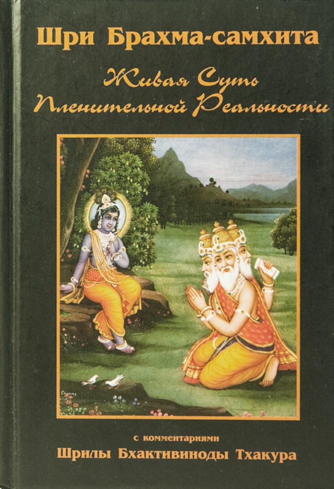

ईश्वरः परमः कृष्णः सच्चिदानन्दविग्रहः ।
अनादिरादिर्गोविन्दः सर्व्वकारणकारणम् ॥ १ ॥
иш̇варах̣ парамах̣ кр̣шн̣ах̣
саччида̄нанда-виграхах̣
ана̄дир а̄дир говиндах̣
сарвва-ка̄ран̣а-ка̄ран̣ам
иш́варах̣ – владыка;
парамах̣ – совершенный;
кр̣шн̣ах̣ – господь Кришна;
шат̣ – заключающий в себе вечное существование;
чит – абсолютное знание;
а̄нанда – и абсолютное блаженство;
виграхах̣ – чья форма;
ана̄дих̣ – без начала;
а̄дих̣ – начало;
говиндах̣ – господь Кришна;
сарвва-ка̄ран̣а-ка̄ран̣ам – причина всех причин;
Кришна, известный как Говинда – верховный господь, абсолютная истина. Он вечен и полон блаженства, а тело его духовно. Безначальный, он сам – начало всего сущего и причина всех причин.
Обладающий собственным вечным именем, вечным обликом, вечными качествами, наслаждающийся своими вечными удивительными деяниями, светозарный Кришна возвышается над всеми прочими существами, повелевая ими как всевышний. Имя Кришна – его вечное имя. Подчеркивая его свойство привлекать к себе любовь всех живых существ, оно провозглашает его верховное положение в иерархии бытия. Его облик юноши с двумя руками, в которых он держит флейту (Муралидхар), с чарующим небесно-темно-синим (Шьямасундар) оттенком кожи – средоточие истины (сат), сознания (чит) и радости (ананды). Этот облик – его вечная неизменная сущность.
Несмотря на свою всемогущую и величественную природу, силой своей непостижимой энергии в своем чарующем облике юноши обычного роста он привлекает к себе все живое; и присущая тому вечному облику природа вседержителя, обладающего чудесными духовными качествами, чувствами и прочим, отличается необыкновенной, всеобъемлющей гармоничностью. Истина, бессмертное сознание и божественное блаженство достигают в нем своей полной славы, абсолютной насыщенности и глубины.
Вездесущая Сверхдуша (Параматма), всемогущий господь (Ишвара – Вишну-Вседержитель) – всего лишь часть его сокровенного я, явленная в материальном мире. Вот почему Кришна – единственный верховный господь, Парамешвара (ӣш̇варах̣ парамах̣ кр̣шн̣ах̣). И хотя его безграничные духовные чувства и качества, безусловно, отличаются одно от другого, его непостижимым могуществом они совершенным образом соединены и вечно проявляются в одном бесконечно чарующем и непревзойденном духовном облике. Этот божественный образ есть личность Кришны, а личность Кришны есть этот божественный образ. Его божественный образ – это олицетворенная, абсолютная, насыщенная полнота бытия, сознания и блаженства; а бескачественный и не имеющий формы дух (Брахман) – ненасыщенное начало бытия, сознания и блаженства – всего лишь сияние, исходящее от тела той личностной, абсолютной и насыщенной полноты.
Сокровенный божественный образ Кришны сам по себе не имеет начала, но он – начало Брахмана и Параматмы. И именно этот самосущий Кришна, которому служит изначальная богиня процветания Шри, есть Говинда – именуемый так по его играм в образе Гопати – владыки коров, Гопапати – повелителя пастухов, Гопипати – повелителя пастушек, Гокулапати – владыки священного селения на Земле, где все заботятся о коровах, а также Голокапати – властелина священной обители коров. Как повелевающий и внимающая повелениям, он – причина всех причин: приведенная в движение взглядом его частичной повелевающей аватары (пуруша-аватары) в виде Параматмы, его низшая, подчиненная энергия создает материальный мир. Бесчисленные индивидуальные души, дживы, суть лучи сияния проявленной пограничной энергии, исходящей из Параматмы.
Эта священная книга провозглашает высшее превосходство господа Кришны надо всем сущим, а потому шлока, которой она открывается, достигает этой цели, содержа в себе его святое имя.
सहस्रपत्र-कमलं गोकुलाख्यं महत्पदम् ।
तत्कर्णिकर-तद्धाम तदनन्तांशसम्भवम् ॥ २ ॥
сахасра-патра-камалам̇ гокула̄кхйам̇ махат-падам
тат-карн̣ика̄ра-тад-дха̄ма тад-ананта̄м̇ш̇а-самбхавам
сахасра-патра – обладающий тысячей лепестков;
камалам̣̇ – лотос;
гокула̄кхйам̣̇ – известный как Гокула;
махат-падам – высшая обитель;
тат – этого (лотоса);
карн̣ика̄рам – завиток;
тат – его (Кришны);
дха̄ма – обитель;
тат – это (Гокула);
ананта – его бесконечного аспекта, Баларамы;
ам̇ш́а – из части;
самбхавам – произведенный;
(В данной шлоке описывается Гокула, духовная обитель (дхама), место чудесных игр вкушающего божественную радость Шри Кришны). Непревзойденно прекрасная обитель Кришны – Гокула; она вечно проявлена частью бесконечного (ананты). Обитель эта принимает форму единственного в своем роде священного цветка лотоса с тысячами лепестков, сердцевина которого есть местопребывание самого Кришны.
Неотличная от Голоки Гокула не сотворена и не принадлежит материальному миру. Безграничная энергия Кришны вечно расширяется, а источник той энергии – божественное альтер эго Кришны – Баладева. Безграничный аспект духовной личности Баладевы двояк: он объемлет и духовное, и материальное. Одну четверть всех владений господа составляет бесконечный материальный мир (экапада-вибхути), и это будет обсуждаться в соответствующем месте. На долю духовной бесконечности приходится три четверти великолепия господа (трипада-вибхути). Это царство, где нет места скорби, смерти или страху; и по самой своей природе оно лучезарно, ибо это – царство духа. Это царство – проявленное величие всемогущего, великая Вайкунтха, паравьома – безграничный духовный мир за пределами материального.
Лежащий вне сферы материальной природы на противоположном берегу реки бесстрастия (Вираджи), во всей своей славе возвышается тот мир, вечно окруженный духовным сиянием Брахмана. Венчает то бесконечное божественное царство обитель абсолютной сладости и красоты – Гокула, или Голока, высшая сфера великолепия духовного мира, вечно блещущая своей непревзойденной красотой. Некоторые знатоки называют ее обителью великого Нараяны (Маха-Нараяны) или изначального Нараяны (Мула-Нараяны). Таким образом, Гокула, неотличная от Голоки, – лучшая из обителей господа. Эта лучезарная святая обитель предстает взору как Голока или как Гокула – в зависимости от того, где происходит ее явление: вверху или внизу.
Шримат Санатана Госвами писал в Шри Брихад-бхагаватамрите, вобравшей в себя суть всех священных писаний: йатха̄ крӣд̣ати тад бхӯмау голоке ’пи татхаива сах̣ адха-ӯрддхватайа̄ бхедо ’найох̣ калпате кевалам. Смысл данного утверждения состоит в том, что в Гокуле, явленной в материальном мире, Кришна предается своим божественным играм в точности так же, как он это делает на Голоке. Нет никакой разницы между Голокой и Гокулой помимо того, что Голока находится в высочайшей сфере духовного мира, и это же место игр Кришны проявляется в материальном мире как Гокула.
Шри Джива Госвами пояснил в своей Шат-сандарбхе: голока-нирӯпан̣ам̇; вр̣нда̄вана̄дӣна̄м̇ нитйа-кр̣шн̣а-дха̄ма-твам̇; голока-вр̣нда̄ванайор экатван̃ ча, – хотя Голока и Гокула тождественны друг другу, благодаря непостижимому могуществу Кришны Голока располагается в высочайшей сфере духовного мира, в то время как Гокула, находящаяся в Матхура-мандале (области Матхуры), явлена в пределах менее значимой четверти владений господа – материальном мире, изошедшем из его ввергающей в заблуждение энергии по имени майя. Ничтожный интеллект дживы абсолютно не в силах постичь, каким образом божественная обитель, занимающая три четверти его владений, может уместиться в пределах нижней сферы – в низшей, материальной части его царств, на долю которой приходится только четверть божественных энергий. В этом свидетельство величия непостижимого могущества Кришны.
По своей сути Гокула – обитель господа; хотя и проявленная в материальном мире, она никоим образом не измерима, не ограничена материальным временем, пространством и обстоятельствами. Будучи высшей бесконечной реальностью (парама-ваикун̣т̣ха-таттва), Гокула вечно лучезарна и ничем не ограничена. И все же обусловленные души, вследствие своей погруженности в материю, не могут удержаться от соблазна даже Гокулу низвести до уровня своих материальных чувств и интеллекта. Из-за своих несовершенных чувств и ума даже на обитель господа, Гокулу, они смотрят как на часть материального мира, так же как недалекий человек полагает, что солнце скрыто облаком, хотя в действительности пелена застилает не солнце, а его глаза.
Только тот, кто по великой удаче сумел полностью разорвать связь с материальным, способен видеть Голоку в Гокуле и Гокулу в Голоке. Истории не известны случаи, когда посредством знания (гьяны), приходящего от блаженного сознания души в процессе ее усердных попыток отличить небытие от бытия, иллюзию от реальности, человеку удалось бы проникнуть взглядом в область Вайкунтхи. Это царство расположено выше разреженного состояния истины, знания и блаженства, которое представляет собой изначальный Брахман, неделимый абсолют. Вот почему знание (гьяна), обретаемое в результате самостоятельных усилий по достижению просветления, не в силах принести священного видения Голоки или Гокулы. Причина состоит в том, что все, развивающие гьяну, стремящиеся к освобождению или ищущие вечную реальность, полностью полагаются лишь на собственное утонченное восприятие, пренебрегая поисками милости исполненного непостижимых сил Кришны. Вот почему попытки обрести сознание духовного единства не приводят их к достижению Голоки-Вриндаваны.
Как разновидность эксплуатации, или кармы, усилия в йоге равным образом не способны привлечь милость господа. Поэтому они также не приведут к успеху в поисках мира нематериальной деятельности, пребывающего над единством Брахмана. Лишь воспринявшие чистую преданность, шуддха-бхакти, могут обрести милость Кришны, властелина непостижимых сил; и лишь по милости Кришны наступает конец связи души с мирской иллюзорной природой – душа обретает счастье видеть Гокулу.
В этой связи упомянем о двух основных видах совершенства, достижимых на пути преданности, бхакти-сиддхи. Совершенство истинного духовного я, достигаемое в ходе странствий души в этом мире, – это сварупа-сиддхи, а совершенство, обретаемое по уходе из бренного мира – это васту-сиддхи. При обретении сварупа-сиддхи Голоку видят в Гокуле, при васту-сиддхи Гокулу видят в Голоке – это глубочайшая тайна.
С обретением премы, божественной любви, достигается сварупа-сиддхи; а затем, когда по милости Кришны устраняются как грубые, так и тонкие иллюзорные покровы обусловленной души, она обретает васту-сиддхи. В любом случае, до тех пор, пока человек не достигнет совершенства в преданности, бхакти-сиддхи, он будет видеть Гокулу отличной от Голоки.
Окруженное мириадами лепестков, несравненное духовное царство дивных нескончаемых чудес – это Гокула, вечная божественная обитель Кришны.
कर्णिकारं महघन्त्रं षट्कोणं वज्रकीलकम् ।
षडङ्ग-षट्पदी-स्थानं प्रकृत्या पुरुषेण च ॥
प्रेमानन्द-महानन्द-रसेनावस्थितं हि यत् ।
ज्योतीरूपेण मनुना कामबीजेन सङ्गतम् ॥ ३ ॥
карн̣ика̄рам̇ махад-йантрам̇ шат̣-кон̣ам̇ ваджра-кӣлакам
шад̣ан̇га-шат̣падӣ-стха̄нам̇ пракр̣тйа̄ пурушен̣а ча
према̄нанда-маха̄нанда-расена̄вастхитам̇ хи йат
джйотӣрӯпен̣а мануна̄ ка̄ма-бӣджена сан̇гатам
Сердцевина священного лотоса, его срединная часть, есть местопребывание Кришны. Ею правят муж-господин и внимающая указаниям супруга. Ее форме соответствует сокровенный шестиконечный символ (янтра). Всевышний, сияющий словно алмаз Кришна, источник всех божественных энергий, правит там, подобный оси, вокруг которой вращается все сущее. Великая восемнадцатислоговая мантра, состоящая из шести частей, проявляется как шестиугольлник, также состоящий из шести частей.
Есть два основных вида чудесных игр, или лил Кришны, – проявленные и непроявленные игры. Игры Вриндавана, доступные взору людей – это проявленная Кришна-лила, а те игры, что скрыты от их взора, есть непроявленная Кришна-лила. На Голоке непроявленная лила вечно проявлена, а в Гокуле лила открывается глазам мирских людей, когда на то есть воля Кришны.
Шрила Джива Госвами писал в Кришна-сандарбхе: апракат̣а-лӣла̄тах̣ прасӯтих̣ пракат̣а-лӣла̄йа̄м абхивйактих – «Проявленная лила – это откровение непроявленной лилы». Далее в Кришна-сандарбхе сказано: ш̇рӣ-вр̣нда̄ванасйа прака̄ш̇а-виш̇ешо голокатвам; татра пра̄пан̃чика-лока-пракат̣а-лӣла̄вака̄ш̇атвена̄вабха̄сама̄нам̇ прака̄ш̇о голока ити самартханӣйам. Смысл данного изречения состоит в том, что любой интервал, обнаруживаемый в проявленной лиле Кришны в иллюзорном мире, заполняется чудесными играми, незримо и неявно протекающими на дальнем плане бытия; это игры Голоки, или Голока-лилы.
И все эти положения обобщены Шрилой Рупой Госвами в его Лагху-Бхагаватамрите: йат ту голока-на̄ма сйа̄т тач ча гокула-ваибхавам; та̄да̄тмйа-ваибхаватван̃ ча тасйа тан махимоннатех̣ – Голока суть нематериальное проявление высшего чудесного духовного величия Гокулы. Итак, Голока – просто тождественное проявление славы Гокулы.
Не каждая из чудесных игр Кришны непременно проявлена в Гокуле, но все его игры вечно явлены на Голоке. Обусловленная душа может видеть непроявленные лилы Голоки – а Голока представляет собой тождественное и полное чудесного величия проявление Гокулы – двумя способами, а именно: посредством почитания мантры (мантропасанамайи) и чисто спонтанно (сварасики). Шри Джива Госвами пояснил в своих трудах, что каждое из различных местонахождений и сопутствующих обстоятельств божественных игр обладает своим постоянным локализованным существованием, и поэтому каждое из них может созерцаться посредством соответствующей мантры. Мантропасанамайи-лила – это открываемое в созерцании видение Голоки, вырастающее из постоянного локализованного и осуществляемого посредством мантры внутреннего созерцания места, соответствующего определенной игре Кришны. Но те из его бесчисленных игр, что охватывают много мест, наполняя их многообразными божественными чудесами и поразительными деяниями, полны разнообразия и спонтанности, а потому относятся к типу сварасики: они открываются тем вайшнавам, чья способность к спонтанной духовной любви достигла должной зрелости.
Данный текст подразумевает оба этих значения. Во-первых, в играх, указываемых восемнадцатью слогами мантры, главным основаниям мантры передаются соответствующие им местоположения, с тем чтобы каждое проявляло определенную игру Кришны: клӣм̇ кр̣шн̣а̄йа говинда̄йа гопӣджана-валлабха̄йа сва̄ха̄. Сказано, что данная мантра состоит из шести частей, или шести метрических оснований, а именно: (1) кр̣шн̣а̄йа (2) говинда̄йа (3) гопӣджана (4) валлабха̄йа (5) сва̄ и (6) ха̄. Отсюда видно, что структура мантры формируется последовательным расположением этих шести составляющих.
О великом шестиугольном тайном символе (или круге, символизирующем царство бога, махад-янтре) сказано следующее: он состоит из семени (биджи), побуждающего начала, или семени желания (кама-биджи) – клӣм̇ есть центральная ось символа. Сосредоточивая с помощью данной формулы свои мысли на абсолютной истине, можно эту истину постичь, как это сделал Чандрадхваджа (господь Шива).
В поучениях Гаутамия-тантры сказано: сва̄-ш̇абдена ча кшетраджн̃о хети чит-пракр̣тих̣ пара̄: слово сва̄ указывает на кшетраджну, душу, а ха̄ указывает на высшую нематериальную природу. Согласно Шри-Хари-бхакти-вилaсе, уттара̄д говинда̄йетй асма̄т сурабхим̇ го-джа̄тим̇; тад уттара̄д гопӣджанетй асма̄т видйа̄ш̇ чатурддаш̇а, тад уттара̄д валлабха... В данной строфе сказано, что человек может осознать локализованную игру господа посредством почитания мантры. Такова цель почитания мантры.
Общий смысл сказанного состоит в том, что человеку, обладающему глубоким стремлением обрести доступ к божественным играм Кришны, следует, с надлежащим пониманием своего отношения к абсолютному (самбандха-джнаной), рожденного его духовным вкусом в преданном служении (бхакти-расой), служить Кришне посредством своего внутреннего духовного я. Отношения человека с богом устанавливаются, когда он постигает сокровенное знание, а именно: (1) сокровенное естество Кришны, (2) сокровенную природу духовных игр Кришны во Врадже, (3) сокровенное естество его ближайших спутниц, гопи (4) сокровенную природу полного вручения себя Кришне, присущую тад валлабха, его самым дорогим возлюбленным – гопи, (5) сокровенное духовное (исполненное высшего духовного знания) естество чистой души, и (6) чит-пракрити, сокровенную священную природу – сокровенное естество души, в котором она воздает служение Шри Кришне.
Утвердившийся в таких взаимоотношениях с абсолютом достигает устойчивости (ништхи) в осуществлении душой духовной практики (абхидхеи) и узнает о единственной доступной нам форме блаженства и цели жизни (прайоджане) – радости служения высшему личностному мужскому началу, Шри Кришне, обретя самосознание послушной служанки-помощницы Шри Радхи. Таков глубинный смысл сказанного.
Итак, первоначально в сердце вайшнава, находящегося на ступени духовной практики (садханы), благодаря почитанию мантры могут явиться медитационные игры Голоки и Гокулы, и затем, на стадии совершенства (сиддха), ему открываются неограниченные свободные (сва-расика) игры. Таково общее положение Голоки или Гокулы; это будет разъяснено далее, в последующих стихах этой книги.
Смысл выражения джйотӣ-рӯпен̣а мануна̄ состоит в том, что духовный смысл открывается в мантре; при связывании его с нематериальным желанием (апракрита-камой) чистой любви к Кришне, жизнь человека, последовательно продолжающего такое служение, насыщается высшим восторгом блаженства божественной любви (премананда-махананда-расой). Эти вечные, полные любви и радости игры вечно сияют на Голоке.
तत्किञ्जलकं तदंशानां तत्पत्राणि श्रियामपि ॥ ४ ॥
тат-кин̃джалкам̇ тад-ам̇ш̇а̄на̄м̇
тат-патра̄н̣и ш̇рийа̄м апи
Сердцевина этой вечной божественной обители, именуемая Гокулой, – шестиугольная страна Кришны. Тычинки и лепестки лотоса суть жилища пастухов (гопов), самых дорогих друзей Кришны, его самых любящих слуг, – частичных проявлений его собственного я. В виде множества стен предстают взору их сияющие дома. Огромные листья того лотоса подобны рощам, образованным обителями возлюбленных Кришны, возглавляемых Шри Радхикой.
Духовная, пребывающая вне пределов этого мира Гокула имеет форму лотоса. Его венчик шестиугольный; в центре его находится любящая чета – внимающая указаниям и повелевающий – Шри Радха-Кришна, на которых указывает восемнадцатислоговая мантра. Их окружают различные самостоятельные личностные проявления внутренней божественной энергии (их ближайшие слуги). Семя – это Радха-Кришна.
Гопала-тапани-упанишад указывает: тасма̄д ом̇ка̄ра-самбхӯто гопа̄ло виш̇васамбхавах̣, клӣм ом̇ка̄расйа чаикатвам̇ пат̣хйате брахма-ва̄дибхих̣. Омкара – это Гопала, он – и энергия и ее источник, а клӣм̇ – это омкара. Следовательно, клӣм̇ – изначальное семя желания (кама-биджа) – выражает духовную реальность – Шри Шри Радху-Кришну.
चतुरस्रं तत्परितः श्वेतद्वीपाख्यामदभुतम् ।
चतुरस्रं चतुर्म्मुर्त्तेश चतुर्द्धाम चतुरकृतम् ॥
चतुर्भिः पुरुषार्थैश्च चतुर्भिहेतुभिवृतम् ।
शूलैर्दशभिरानद्धमूर्द्धाधो दिग्विदिक्षवपि ॥
अष्टभिर्निधिभिजुष्टमष्टभिः सिद्धिभिस्तथा ।
मनुरूपैश्च दशभिर्दिकपालैः परितो वृतम् ॥
श्यामैर्गौरैश्च रक्तैश्च शुक्लैश्च पार्षदर्षभैः ।
शोभितं शक्तिभिस्ताभिरद्भुताभिः समन्ततः ॥ ५ ॥
чатур ашрам̇ тат-паритах̣
ш̇ветадвӣпа̄кхйам адбхутам
чатур ашрам̇ чатур-ммӯрттеш̇
чатур-ддха̄ма чатуш-кр̣там
чатурбхих̣ пуруша̄ртхаиш̇ ча
чатурбхир хетубхир вр̣там
ш̇ӯлаир даш̇абхир а̄наддхам
ӯрддха̄дхо дигвидикшв апи
ашт̣абхир нидхибхир джушт̣ам
ашт̣абхих̣ сиддхибхис татха̄
манурӯпаиш̇ ча даш̇абхир
дикпа̄лаих̣ парито вр̣там
ш̇йа̄маир гаураиш̇ ча рактаиш̇ ча
ш̇уклаиш̇ ча па̄ршадаршабхаих̣
ш̇обхитам̇ ш̇актибхис та̄бхир
адбхута̄бхиx самантатах̣
(Здесь приводится описание окрестностей Гокулы). Внешнюю часть Гокулы образует чудесная область, имеющая форму квадрата, которая простирается в четырех направлениях и носит имя Шветадвипа. Она разделяется на четыре части – по одной с каждой стороны. Эти четыре части суть обители Васудевы, Санкаршаны, Прадьюмны и Анируддхи.
Вокруг этой четырехугольной обители – четыре цели человеческой жизни: благочестие, выгода, удовлетворение желаний и освобождение (дхарма-артха-ка̄ма-мокша), каждая с соответствующим ей основанием, составленным из мантр четырьмя Ведами – Риг, Сама, Яджур и Атхарва. Десять копий развернуты в направлениях восьми сторон света[1] (на восток, юг, запад, север, северо-восток, юго-восток, юго-запад и северо-запад), вверх и вниз. Восемь сторон света озарены восемью драгоценными камнями, представляющими собой восемь совершенств[2]. Эти камни называются Махападма, Падма, Шанкха, Макара, Каччхапа, Мукунда, Кунда и Нила. Десятью направлениями правят десять стражей в образе мантр. Черный, золотой, красный и белый приближенные господа и чудотворные силы, возглавляемые Вималой, сияют вокруг.
Прежде всего, Гокула – это место пребывания любви и преданности, или према-бхакти, именно поэтому в ней есть Ямуна, Говардхана и Шри Радха-кунда Враджа-мандалы, проявленные на Земле. Более того, полное великолепие Вайкунтхи распространяется во всех направлениях. Все четыре наделенные полнотой качеств экспансии (чатур-вьюха-виласа) господа пребывают каждая в своей области, и от Них беспредельно простирается бесконечное духовное царство, Паравьома-Вайкунтха.
Освобождение, обретаемое на Вайкунтхе, так же, как и обычная праведность, обретение выгоды и удовлетворение желаний, в их изначальной форме, тоже имеют свое место в Гокуле. Здесь же находятся и Веды, вечно воспевающие славу господа Гокулы. Десять оградительных копий развернуты в десяти направлениях; их назначение – остановить всякого, кто без милости Кришны, посредством медитации пытается достичь Голоки или иным образом связаться с ней. Самонадеянные последователи путей медитации или самоотрешенного познания абсолюта (йога, джнана), пытающиеся достичь Голоки, терпят неудачу, пронзенные этими десятью копьями.
Нирвана, уничтожение собственного я, достигает кульминации на уровне Брахмана; однако этот уровень – не более чем внешний покров Голоки, принявший форму острых копий.
От слова ш̇ӯла, копье, происходит другое слово – триш̇ӯла, трезубец; трезубец символизирует три вида качеств материального мира (раджас, тамас и саттву), а также три аспекта времени – прошлое, настоящее и будущее. Эти направленные в десять сторон света трезубцы рассекают йогов, идущих путем восьмиступенчатой йоги, и джнани, ищущих освобождения в единстве неделимого Брахмана; опрометчиво приблизившиеся к Голоке, они низвергаются в пучину безысходности.
Те же, кто приблизились к Голоке, идя путем преданности, вдохновляемой сознанием величия господа (аишварьи), очаровываются восемью совершенствами, первое из которых – анима, и великолепными сокровищами – Махападмой и прочими; там они и остаются, плененные красотой Вайкунтхи, представляющей собой внешние области Голоки. Еще менее разумные подпадают под власть десяти стражей-мантр, наблюдающих за десятью сторонами света; такие искатели возвращаются в материальный мир, поделенный на семь кругов бытия (главный из которых – Бхурлока).
По этим причинам Голока практически непостижима и недоступна. На ней обитают все сокровенные проявления всевышнего, провозглашающие заповеди чистой религии для различных эпох и, вечно стремящиеся даровать милость своим приверженцам, достигшим их исключительно посредством чистой преданной любви, шуддха-према-бхакти. Каждое из этих проявлений господа окружают их личные приближенные, и на Гокуле их обителью служит Шветадвипа.
Вот почему Шрила Вриндавана Даса Тхакур, Вьяса Чайтанья-лилы, называет Набадвипу Шветадвипой. На Шветадвипе вечно проходят игры Набадвипы – высшее проявление игр Гокулы. Это означает, что Набадвип-мандала, Враджа-мандала и Голока есть единая неделимая истина. Они предстают различными лишь в силу бесконечной многогранности и разнообразия проявлений божественной любви. С этим связана еще одна тайная истина, открывающаяся только по милости Самого Кришны великим святым, преисполненным преданности и любви.
Материальный мир делится на четырнадцать уровней бытия[3]. Стремящиеся к наслаждениям и поглощенные кармической деятельностью грихастхи (карми) странствуют по трем сферам – Бхух, Бхувах и Свах. Умиротворенные подвижники, непреклонно следующие великому обету брахмачарьи, воздержанные и преданные истине, в ходе своей абсолютно бескорыстной деятельности странствуют по кругам Махарлоки, Джаналоки и Таполоки, вплоть до Сатьялоки. В высшей сфере – круге Сатьялоки располагается обитель господа Брахмы, а выше нее находится нематериальный безграничный мир Вайкунтхи – обитель возлежащего на поверхности Молочного океана Кширодакашайи Вишну.
Санньяси-парамахамсы (личности, достигшие совершенства в отреченности) и демоны, убитые самим господом Хари, пересекают реку бесстрастия, Вираджу; иными словами, они возвышаются над всеми четырнадцатью сферами материального мира и достигают нирваны, то есть утрачивают индивидуальные качества души, погружаясь в сияние Брахмана. Преданные же слуги господа, почитающие бесконечное величие господа – слуги господа, стремящиеся к освобождению, чистые слуги, слуги, движимые любовью, слуги, поглощенные любовью и слуги, всецело охваченные любовью – все они находят свое место на Вайкунтхе, бесконечной духовной обители господа Нараяны. Но лишь слуги господа, преданные высочайшей сладости и красоте любви Враджи, верные последователи обитателей Враджи, могут достичь Голока-дхамы, божественной обители Голоки.
Благодаря непостижимому могуществу Кришны этим преданным отводятся различные положения – соответственно их расе, склонности к священному служению. Слуги, неуклонно и с полной верой следующие путем чистой преданности обитателей Враджи, попадают на Кришналоку, а верные последователи чистой преданности жителей Набадвипа – на Гауралоку. Слуги господа, одинаково привязанные к Врадже и Набадвипе, обретают счастье служения и на Кришналоке и на Гауралоке.
Вот почему Шри Джива Госвами пишет в своей священной Шри Гопaла-чампу: йасйа кхалу локасйа голокас татха̄ го-гопа̄ва̄са-рӯпасйа ш̇ветадвӣпатайа̄ ча̄нанйаспр̣шт̣ах̣ парамаш̇уддхата̄-самудбуддха-сварӯпасйа та̄др̣ш̇а-джн̃а̄намайа-катипайама̄тра-прамейа-па̄тратайа̄ тат-тат-парамата̄ мата̄, парама-голоках̣ парамах̣ ш̇ветадвӣпа ити – тот высший мир зовется Голокой, поскольку он – обитель коров и пастухов, высшая обитель самозабвенных игр господа, неотличная от самого Кришны; а кроме того, тот высший мир носит имя Шветадвипы (Белого острова) в силу несравненных качеств своей безупречной чистоты. Он проявляется своей необыкновенной и непостижимой природой как место особых нектарно-сладостных ощущений соответствующей нематериальной, непостижимой формы. Как высшая Голока, так и высшая Шветадвипа слились в одной нераздельной Голока-дхаме.
Глубинный смысл этого изречения состоит в том, что хотя Кришна наслаждается своими чудесными играми во Врадже, он, все же, не может испытать всей полноты счастья расы, или божественной сладости, а потому принимает сердце и сияние Шри Радхики, женственного источника его любви – и ради этой цели Голока вечно проявляется как Шветадвипа.
Это положение объясняется в следующем стихе: ш̇рӣ-ра̄дха̄йа̄х̣ пран̣айа-махима̄ кӣдр̣ш̇о ва̄найаива̄, сва̄дйо йена̄дбхута-мадхурима̄ кӣдр̣ш̇о ва мадӣйах̣; саукхйа̄н ча̄сйа̄ мад ану-бхаватах̣ кӣдр̣ш̇ам̇ вети лобха̄т, тад бха̄ва̄д̣хйах̣ самаджани ш̇ачӣгарбха-синдхау харӣндух̣ – ««Какова же та великая слава любви Шри Радхи? Что есть моя красота и несравненная сладость моей любви, коими наслаждается Шри Радха? И какое счастье испытывает Шри Радха, ощущая мои сладость и красоту?» Стремясь изведать три этих чувства, луна-Кришначандра родился из океана лона матери Шачи». В этих строках раскрыт тайный глубинный смысл слов Шри Дживы Госвами.
В Ведах также сказано: рахасйам̇ те вадисйа̄ми–джа̄хнавӣ-тӣре навадвӣпе голока̄кхйе дха̄мни говиндо двибхуджо гаурах̣ сарвва̄тма̄ маха̄пурушо маха̄тма̄ маха̄йогӣ тригун̣а̄тӣтах̣ саттва-рӯпо бхактим̇ локе ка̄ш̇йатӣти; тад эте ш̇лока̄ бхаванти–эко девах̣ сарвва-рӯпӣ маха̄тма̄ гаура-ракта-ш̇йа̄мала-ш̇вета-рӯпаш̇ чаитанйа̄тма̄; са ваи чаитанйа-ш̇актир бхакта̄ка̄ро бхактидо бхактиведйах̣ – «Позволь мне открыть тебе эту тайну: «На берегу Ганги, в святой обители Набадвипа, неотличной от Голока-дхамы, в человеческом облике является Говинда-Гаурачандра. Душа всех душ, он – всевышний господь и великий святой, великий санньяси – воплощение чистого бытия, неоскверненного тремя качествами материальной природы. Он являет миру чистую преданность. Он – господь, один без второго, в коем пребывают все проявления абсолюта, высшая душа, золотая, красная, черная и белая аватара различных эпох. Он – само высочайшее личностное естество божественного сознания, он преисполнен духовных сил. Нисходящий в облике своего слуги, дарователь преданности, он познается преданностью».
Во многих изречениях писаний, таких как а̄сан варн̣а̄с трайах̣, кр̣шн̣а-варн̣ам̇ твиша̄ кр̣шн̣ам̇, йада̄ паш̇йаx паш̇йати рукма-варн̣ам, маха̄н прабхур ваи и ряде прочих, говорится о тождестве Кришны и Гаурачандры. И все же золотой облик, в котором он милостиво является в вечной обители Набадвипе, неотличной от Голоки, где он вечно погружен в наслаждение нектаром священных игр Шри Шри Радхи и Кришны – этот золотой (Гаура) облик упомянут в каждом из приведенных ведических изречений.
И подобно тому, как рождение и прочие игры Кришны осуществляются при помощи йогамайи – потока его внутренней личной энергии в определенном месте на поверхности Земли, приход золотого господа Гауры, его рождение из лона Шачидеви и его игры также осуществляются йогамайей на поверхности Земли в Шри Набадвип-дхаме.
Эта священная истина – аксиома духовной науки; это не вымысел, не плод воображения, подпавшего под власть энергии заблуждения – майи.
एवं ज्योतिर्म्मयोः देवः सदानन्दः परात्परः ।
आत्मारामस्य तस्यास्ति प्रकृत्या न समागमः ॥ ६ ॥
эвам̇ джйотирммайо девах̣ сада̄нандах̣ пара̄тпарах̣
а̄тма̄ра̄масйа тасйа̄сти пракр̣тйа̄ на сама̄гамах̣
Владыка Гокулы, всевышняя духовная личность бога – собственное я вечной самозабвенной радости. Неоскверненный влиянием материи, он вечно наслаждается в сотканном из чистого сознания духовном царстве; он никак не связан с обманчивой материальной природой.
Бесподобная высшая сила Кришны, его собственная личностная энергия проявила чудесные игры Голоки или Гокулы. Ее милостью в этих играх могут участвовать и дживы, составляющие пограничную энергию господа. Вспомогательная внешняя энергия майя, подобная тени этого божественного (чит) могущества, располагается на дальнем (низшем) берегу реки Вираджа, служащей нижней границей царства Брахмана; Брахман, в свою очередь, расположен на нижней границе Маха-Вайкунтхи, образующей окрестности, или окраины Голоки. При виде такой безграничной чистоты внешняя энергия майя стыдится предстать перед глазами Кришны, не говоря уже о том, чтобы вступить в непосредственное общение с ним.
मायया रममाणस्य न वियोगस्तया सह ।
आत्मना रमया रेमे त्यक्तकालं सिसृक्षया ॥ ७ ॥
ма̄йайа̄ ‘рамама̄н̣асйа на вийогас тайа̄ саха
а̄тмана̄ рамайа̄ реме тйакта-ка̄лам̇ сиср̣кшайа̄
Кришна – беспристрастный повелитель обманчивой внешней природы – майи; он не связан с внешней майей. И все же майя не полностью отрезана от высшей абсолютной истины – Кришны. В своем желании сотворить мир он соединяется со своей Собственной нематериальной энергией, имя которой Рама; и наслаждение его – в форме брошенного Им взгляда, насыщенного энергией времени, – чисто косвенное.
Сам Кришна прямо не связан с энергией майи; его отношения с ней – лишь косвенные, лишь намек на какую-то связь; в образе (принимаемой Им формы) Пурушаватары, в форме нисходящего повелителя, возлежащего на водах Причинного океана Каранарнавашайи Вишну (Маха-Вишну), он бросает свой взгляд на энергию майи; Каранарнавашайи Вишну – это наделенное всеми качествами частичное проявление Маха-Санкаршаны Вайкунтхи, а Вайкунтха – это абсолютная обитель Кришны.
Но господь не связан с майей даже этим взглядом, ибо роль его взгляда играет божественная сила, безраздельно верная ему энергия Рама. Служанка-помощница Рамы, внешняя энергия майя, служит наделенному полнотой качеств частичному проявлению господа, связанному с Рамой, а ход времени – это сверхъестественная сила Рамы, исполняющая всю работу, и, тем самым, распространяющая свою власть на энергию, создающую мир.
नियतिः सा रमादेवी तत्-प्रिया तद्वशं तदा ।
तल्लिङ्गं भगवान् शम्भुर्ज्योतीरूपः सनातनः ।
या योनिः सापरा शक्तिः कॉमबीजः महद्धरेः ॥ ८ ॥
нийатих̣ са̄ рама̄-девӣ тат-прийа̄ тад-ваш̇ам̇ тада̄
тал-лин̇гам̇ бхагава̄н ш̇амбхур джйотӣрӯпаx сана̄танах̣
йа̄ йоних̣ са̄пара̄ ш̇актих̣ ка̄ма-бӣджах̣ махадд-харех̣
(Здесь описывается косвенная связь бога с майей). Олицетворение духовной энергии господа, Рамадеви, есть Провидение, возлюбленная супруга всевышнего. Явленное при сотворении мира сияние, излучаемое наделенным полнотой качеств частичным проявлением Кришны, суть отражение вечного сияния. Оно принимает образ Бхагавана Шамбху – олицетворения мужского начала божественной природы. Подчиненный силе судьбы, этот символ мужского начала – часть абсолюта, ответственная за созидание материального мира. Порождаемая провидением энергия рождения потомства предстает как женское лоно, воплощение низшей энергии – майи. Союз двух этих начал дает жизнь махат-таттве, представляющей собой лишь отражение изначального семени желания (кама-биджи) всевышнего господа Хари.
Наделенный желанием творить Санкаршана – полномочная экспансия Кришны – берет на себя инициативу сотворения материального мира. Приняв облик первого проявления господа-повелителя (пурушаватары), возлежа на причинных водах, он бросает взгляд на майю.
В акте творения этот взгляд является инструментальной причиной, орудием. Туманный, меркнущий образ того отраженного сияния Всемогущего – это действующий орган зачатия, Шамбху, соединяющийся с формообразующими аспектами майи – тени энергии по имени Рама. Далее, тень изначального семени желания (кама-биджи), принимает образ махат-таттвы – великого, вселенского оплодотворяющего начала – и включается в процесс сотворения вселенной. Первоначальное проявление желания, сотворенное Маха-Вишну, называется хиранмайя махат-таттва; это принцип внутренней готовности к сотворению вселенной.
Подразумеваемая здесь идея состоит в том, что мир творит воля всевышнего повелителя, пуруши, играющая роль как инструментальной, так и действенной причин (нимитта-упадана). Инструментальная причина олицетворяется майей, играющей роль женского органа воспроизведения; действенная причина существует в облике Шамбху, играющего роль мужского органа зачатия, а Маха-Вишну – это повелитель, чья воля служит начальным импульсам творения.
Изначальные компоненты творения, или субстанция (прадхана) – суть действенная причина, а женское, воспринимающее начало (пракрити) – это майя. Соединяющая их воля – это тот, кто проявляет иллюзорный материальный мир, повелитель (пуруша), полномочная экспансия Кришны. Эти три личности осуществляют процесс сотворения вселенной.
Пребывающее на Голоке изначальное семя желания, кама-биджа – это чистая духовная познавательная способность, а семя желания, существующее в материальном мире, – проявление теневой энергии, существующей в облике богини Кали и ряда других божеств. Хотя изначальное семя желания и выступает прототипом майи, оно бесконечно далеко от майи, а материальное семя желания – всего лишь зыбкое иллюзорное отражение изначального семени. Рождение Шамбху описано в десятом и пятнадцатом стихах настоящей главы.
लिङ्गयोन्यात्मिका जात इमा माहेश्वरी प्रजाः ॥ ९ ॥
лин̇га-йонй-а̄тмика̄ джа̄та̄ има̄ ма̄хеш̇варӣ праджа̄х̣
Все население мира-царства майи порождено соединением мужского и женского начал.
Владычество всевышней личности бога объемлет все четыре четверти безграничных величественных царств господа. Скорбь, смерть и страх отсутствуют в трех четвертях его величественных царств – в духовных обителях Вайкунтхи, Голоки и прочих. В этом же, иллюзорном мире, все живые существа – от богов до людей и далее вниз, со всеми сферами их бытия, находятся под властью майи; все сущее здесь было порождено действенной и инструментальной причинами – родилось от соития противоположных полов. При всех открытиях материалистической науки, не подлежит никакому сомнению, что все, известное нам, появилось на свет в результате такого союза. Деревья, растения и даже неодушевленная материя возникли от союза мужского и женского начал.
Стоит отметить, что хотя упоминание здесь мужского и женского органов воспроизведения могут принять за непристойность, с научной точки зрения картина, в основу которой положен принцип соития мужского и женского начал, наиболее точна и достойна самой высокой оценки за глубину объяснения основополагающих законов бытия. Кажущаяся непристойность такого описания – следствие бытующих в обществе условностей, но ни материальная, ни духовная наука не могут поступиться истиной ради человеческих предрассудков.
Итак, мы не можем избежать подобных аналогий при разъяснении предвечного принципа материального мира – иллюзорного семени желания. Подчиняющая, или мужская, деятельная энергия и подчиненная женская деятельная энергия – вот и все, что подразумевают используемые здесь образы.
शक्तिमान् पुरुषः सोऽयं लिङ्गरूपी महेश्वरः ।
तस्मिन्नाविभूल्लिङ्गे महाविष्णुर्जगत्पतिः ॥ १० ॥
ш̇актима̄н пурушах̣ со ‘йам̇ лин̇га-рӯпӣ махеш̇варах̣
тасминн-а̄вир абхӯл-лин̇ге маха̄вишн̣ур джагат-патих̣
Представляющий вечный прототип мужского достоинства (лингам) Махешвара Шамбху, мужское начало действенной причины, соединяется с инструментальной причиной, представленной его энергией, майей. Бросив свой взгляд, господь вселенной, Маха-Вишну, частью своей входит в Шамбху.
В паравьоме – сфере духовного мира, в которой царят величие и благоговейное почтение – правит Шри Нараяна, неотличный от самого Кришны. Маха-Санкаршана это одна из четырех экспансий Шри Нараяны в составе чатур-вьюхи. Таким образом, даже он является наделенной полнотой качеств частью Кришны в форме Нараяны. Силой своего духовного могущества наделенная полнотой качеств экспансия Маха-Санкаршаны вечно возлежит на водах реки Вираджа, расположенной на полпути между нематериальным и материальным миром; при сотворении вселенной он бросает взгляд на удаленную теневую энергию – энергию майя.
В этот момент отражение изначального образа господа в облике его божественного взгляда – Шамбху, повелителя прадханы – предвечных материальных элементов, энергия которых существует в образе Рудры – соединяется с материальной инструментальной причиной – майей; но Шамбху не способен действовать без поддержки Маха-Вишну, непосредственно представляющего духовное могущество Кришны. По этой причине материальное оплодотворяющее начало (махат-таттва) может возникнуть, лишь когда наделенная полнотой качеств экспансия Кришны – изначальная аватара Маха-Вишну, который представляет собой полноценную часть Маха-Санкаршаны, являющегося полноценной экспансией Кришны – одобряет взаимодействие энергии Шивы – майи, и исполняющих роль действенной причины предвечных материальных элементов.
С дозволения Маха-Вишну энергия Шивы последовательно создает эго (аханкару) и пять основных элементов (панча-бхута) – эфир и т.д., тонкие формы их качеств (объекты чувств, танматры) и материальные чувства (обусловленной) души. Индивидуальные души, дживы, излучаются как корпускулы лучей сияния Маха-Вишну. Это будет разъяснено далее в нашем комментарии.
सहस्रशीर्षा पुरुषः सहस्राक्षः सहस्रपात् ।
सहस्रबाहुर्विश्वत्मा सहस्रांशः सहस्रसूः ॥ ११ ॥
сахасра-ш̇ӣрша̄ пурушах̣ сахасра̄кшах̣ сахасра-па̄т
сахасра-ба̄хур виш̇ва̄тма̄ сахасра̄м̇ш̇ах̣ сахасра-сӯх̣
Тысячами тысяч ликов, тысячами тысяч глаз, тысячами тысяч ног, тысячами тысяч рук, тысячами тысяч воплощений в тысячах тысяч наделенных полнотой качеств экспансий обладает господь вселенной, Маха-Вишну; он – душа вселенной и творец тысяч и тысяч живых существ.
Объект поклонения и славословий гимнов Вед, Маха-Вишну наделен безграничными чувствами и энергиями; он – изначальная аватара, из которой исходят все прочие аватары.
नारायणः स भगवानापस्तस्मात् सनातनात् ।
आविरासीत् कारनारणौ-निधिः सङ्कर्षणात्मकः ।
योगनिद्रां गतस्तस्मिन् सहस्रांशः स्वयं महान् ॥ १२ ॥
на̄ра̄йан̣ах̣ са бхагава̄н а̄пас тасма̄т сана̄тана̄т
а̄вир а̄сӣт ка̄ран̣а̄рн̣о-нидхих̣ сан̇каршан̣а̄тмаках̣
йоганидра̄м̇ гатас тасмин сахасра̄м̇ш̇ах̣ свайам̇ маха̄н
В материальном мире Маха-Вишну известен под именем Нараяны. Из этой вечной личности рождаются воды Причинного океана. Наделенная полнотой качеств часть Санкаршаны, царствующего в паравьйоме, источник тысяч тысяч полновластных экспансий, он – верховная личность бога, высшее личностное мужское начало; чтобы погрузиться в свой божественный сон (йоганидру), он ложится на воды Причинного океана.
Глубокое блаженное самадхи всевышнего, погруженного в сокровенную радость своего собственного я, называется йоганидрой. Упоминавшаяся ранее Рамадеви – это сама йоганидра, являющая себя в образе йогамайи, божественной энергии господа. [12]
तद्रोमबिल-जालेषु बीजं सङ्कर्षणस्य च ।
हैमान्यण्डानि जातानि महाभूतावृतानि तू ॥ १३ ॥
тад-рома-била-джа̄лешу бӣджам̇ сан̇каршан̣асйа ча
хаима̄нй-ан̣д̣а̄ни джа̄та̄ни маха̄бхӯта̄вр̣та̄ни ту
Божественные семена Санкаршаны рождаются из пор Маха-Вишну в виде бесконечных золотых яйцеклеток; эти золотые клетки покрыты пятью главными материальными элементами.
Таков исполинский размах деятельности изначальной аватары, личности бога, возлежащего на водах Причинного океана. Из пор его тела выходят бесконечные мириады семян, каждое из которых – вселенная. Эти вселенные созданы по одному образцу – они представляют собой подобие безграничной обители в духовном мире; пока они остаются внутри тела пурушаватары как низший, теневой аспект божественного (чидабхаса) – они подобны золотым яйцам; когда же Маха-Вишну решает приступить к сотворению этого мира, их окутывают главные материальные элементы, участвующие в качестве материала для инструментальной и действенной причин мира майи. Эти золотые космические яйца исходят вместе с выдохом верховной личности, и когда они проникают внутрь безграничного лона майи, в них входят пять дифференцированных материальных элементов (стихий) (земля, вода, огонь, воздух и эфир).
प्रत्यण्डमेवमेकांशादेकांशाद्विशति स्वयम् ।
सहस्रमूर्द्धा विश्वात्मा महाविष्णुः सनातनः ॥ १४ ॥
пратй-ан̣д̣ам евам ека̄м̇ш̇а̄д ека̄м̇ш̇а̄д виш̇ати свайам
сахасра-мӯрддха̄ виш̇ва̄тма̄ маха̄вишн̣ух̣ сана̄танах̣
В образе своих полноценных экспансий тот Маха-Вишну входит в каждую из вселенных (в каждое из космических яиц). Все эти божественные проявления есть его всемогущая нематериальная форма, душа вселенной – вечный образ Маха-Вишну с тысячами и тысячами голов.
Возлежащий на водах Причинного океана Маха-Вишну – это полноценная часть Маха-Санкаршаны; и какое бы множество вселенных ни исходило из его тела, он проникает в каждую из них в образе своих частей-проявлений. Каждая из этих частей – это гарбходакашайи пуруша, во всех отношениях подобный Маха-Вишну. Гарбходакашайи Вишну иначе называют совокупным антарьями – коллективной, вездесущей Сверхдушой вселенных.
वामाङ्गादसृजद्विष्णुं दक्षिनाङ्गात् प्रजापतिम् ।
ज्योतिर्ल्लिङ्गमयं शम्भुं कूर्च्चदेशादवासृजत् ॥ १५ ॥
ва̄ма̄н̇га̄д аср̣джад вишн̣ум̇
дакшин̣а̄н̇га̄т праджа̄патим
джйотир-ллин̇гамайам̇ ш̇амбхум̇
кӯрчча-деш̇а̄д ава̄ср̣джат
Из левой части своего тела Маха-Вишну создал Вишну, из правой – Праджапати; из межбровья он сотворил Шамбху, принимающего образ сияющего лингама.
Здесь под Шри Вишну подразумевается индивидуальный антарьями, Сверхдуша, присутствующая в сердцах всех джив, кширодакашайи пуруша, возлежащий на водах молочного океана. Изначальный прародитель, Праджапати, как часть всевышнего господа, Хираньягарбха – это не четырехликий бог Брахма; Хираньягарбха – это семя или первообраз всех Брахм, существующих в бесчисленных вселенных. Проявленное сияние божественного мужского начала в форме Шамбху – это обладающее полнотой качеств проявление изначального, предвечного мужского оплодотворяющего начала Шамбху (описанного ранее).
Вишну – это полная личностная экспансия (свамша-таттва) Маха-Вишну, и, стало быть, он – Сарва-Махешвара, всевышний господь всего сущего; а Праджапати-Брахма и Шамбху – это отделенные части (вибхиннамши) Маха-Вишну, божества, наделенные особыми полномочиями. Поскольку личное могущество господа всегда пребывает по его левую сторону, Вишну, появляющийся из духовной энергии чистейшего бытия Маха-Вишну, выходит из левой стороны его тела.
Вишну – это Сверхдуша, пребывающая в сердцах всех джив. Он – личность бога, величиной с большой палец руки, как сказано в Ведах; он хранитель вселенной; карми, добивающиеся возвышенного положения, почитают его как Яджнешвару-Нараяну, владыку жертвоприношений, а йоги, желая погрузиться в самадхи, в созерцании сосредоточиваются на нем как на Параматме.
अहङ्कारात्मकं विश्वं तस्मादेतद्व्यजायत ॥ १६ ॥
ахан̇ка̄ра̄тмакам̇ виш̇вам̇ тасма̄д этад вйаджа̄йата
Этот мир материального эго был порожден Шамбху. Такова роль Шамбху в отношении джив.
Изначальное и чистейшее существо – это верховная личность бога, воплощенная полнота истины, свободной от представлений об отделенной самости. Связанный с мужским началом, врожденный и ведущий к обособленности эгоизм – мнимое обособленное существование, которое ведут души в материальном мире, – не более чем иллюзорное отражение этого чистого бытия; существующее в облике изначального Шамбху, это бытие совокупляется с искаженным отражением Рамадеви – майическим, материальным, вмещающим началом, принимающим образ женского лона. В этом отношении Шамбху описывается как действенная причина – только в категориях первоначального состояния материи. Затем, когда в ходе эволюции проявляются все вселенные, в глубинах существа Шамбху рождается и достигает полного развития образ Рудры; как уже объяснялось, Шамбху возник из брови Маха-Вишну, однако в любых своих проявлениях по сути своей Шамбху состоит из эго (аханкаратмака).
Когда бесчисленные дживы – искры нематериального сознания – чит, исходящие из лучей чит, излучаемых Параматмой – узнают о своем тождестве с (чистым) эго верных и преданных слуг всевышнего господа, их отношения с миром майи прерываются; они становятся обитателями мира Вайкунтхи. Когда же они забывают то чистое эго и желают наслаждаться майей, в их жизнь проникает эгоистический принцип Шамбху, предоставляющий им систему координат для вкушения этого – обособленного – наслаждения.
Таким образом, Шамбху – основополагающее начало, лежащее в основании мира эгоизма и материального физического эго джив.
अथ तैस्त्रिविधैर्वेशैर्लीलामुद्वहतः किल ।
योगनिद्रा भगवती तस्य श्रीरिव सङ्गता ॥ १७ ॥
атха таис тривидхаир веш̇аир лӣла̄м удвахатах̣ кила
йоганидра̄ бхагаватӣ тасйа ш̇рӣр ива сан̇гата̄
Затем верховная личность бога, войдя во вселенную в образах Вишну, Брахмы и Шамбху, начинает игры сотворения, поддержания и разрушения мира. Это – игры в материальном мире; и поскольку эти игры низшего порядка, сам господь остается в стороне от них, пребывая в обществе йоганидры – аспекта божественного могущества господа Вишну – проявления его истинного бытия. Она – женственное воплощение его погруженности в сокровенное священное блаженство.
Будучи отделенными (вибхиннамша) от тела господа, Праджапати и Шамбху пребывают в сфере обособленности и эгоизма, и каждый из них связан со своими собственными энергиями в формах Савитри и Умы. Один лишь Бхагаван, верховная личность бога, Вишну, является господином божественной энергии, персонифицированной энергии чит, существующей в образе Рамы или Шри.
सिसृक्षायां ततो नाभेस्तस्य पद्मं विनिर्य्ययौ ।
तन्नालं हेमनलिनं ब्रह्मणो लोकमद्भुतम् ॥ १८ ॥
сиср̣кша̄йа̄м̇ тато на̄бхес тасйа падмам̇ винирййайау
тан-на̄лам̇ хема-налинам̇ брахман̣о локам адбхутам
Когда Гарбходакашайи Вишну желает творить вселенную, из пупа его вырастает золотой цветок лотоса. Венчающий собой стебель, этот лотос есть Брахмалока, Сатьялока – обитель господа Брахмы.
Здесь слово золото имеет смысл чидабхаса – теневой аспект, бледное отражение божественного.
तत्त्वानि पूर्व्वारुढानि कारणानि परस्परम् ।
समवायाप्रयोगच्च विभिन्नानि पृथक् पृथक् ॥
चिच्छक्त्या सज्जमानोऽथ भगवानादिपूरुषः ।
योजयन् मायया देवो योगनिद्रामकल्पयत् ॥ १९ ॥
таттва̄ни пӯрвва̄рӯд̣ха̄ни ка̄ран̣а̄ни параспарам
самава̄йа̄прайога̄ч ча вибхинна̄ни пр̣тхак пр̣тхак
чич-чхактйа̄ саджджама̄но‘тха бхагава̄н а̄ди-пӯрушах̣
йоджайан ма̄йайа̄ дево йоганидра̄м акалпайат
До слияния пять главных материальных элементов пребывают в исходном состоянии, обособленными в отдельных формах. На этом этапе их взаимодействие еще не началось. Соединяясь со своей божественной энергией, Маха-Вишну, изначальная личность бога, привел в движение майю, связал обособленные элементы; и творя материальный мир, соединяя и гармонизируя их, он оставался погруженным в йоганидру, находясь в брачном союзе со своей божественной энергией.
майа̄дхйакшен̣а пракр̣тих̣ сӯйате сачара̄чарам – «Все движущиеся и неподвижные существа сотворены матерью природой под моим присмотром». Смысл этого утверждения Шри Гиты следующий: первоначально майя, тень божественной энергии – энергии чит, была бездеятельна; составные части безбрежной стихии материи, впоследствии ставшие действенной причиной творения, были отделены одна от другой. По воле Кришны – то есть силой могущества Маха-Вишну – инструментальная и действенная части майи слились, в результате чего проявился материальный мир. Несмотря на это, на протяжении всего акта творения сам всевышний господь остается связанным со своей божественной энергией, йоганидрой.
Слово йоганидра, или йогамайя, следует понимать следующим образом: природа этой божественной энергии – просветлять, то есть открывать истину, в то время как природа ее теневой энергии – являть темноту мирского неведения. Когда Кришна желает просветить, открыть что-то в делах мира тьмы, материального мира, он решает эту задачу, приводя в соприкосновение (йогу) бездеятельную тень майи с высочайшей мощью своей божественной энергии. Это и есть йогамайя.
Это приводит к двум следствиям: проявлению йогамайи на Вайкунтхе и в материальном, исполненном невежества мире. Кришна, полные проявления Кришны (свамши) и те из его отделенных частиц – отдельных душ (вибхиннамша-джив), что совершенно чисты – обретают в этом откровении опыт Вайкунтхи, в то время как души, связанные материей, получают лишь мирской, невежественный опыт. Занавес мешает обретению духовного опыта и духовных ощущений материально обусловленных душ, и этот занавес носит имя йоганидры; это также проявление энергии всевышнего господа. В дальнейшем об этом будет сказано подробнее.
योजयित्वा तु तान्येव प्रविवेश स्वयं गुहाम् ।
गुहां प्रविष्टे तस्मिंस्तु जीवात्मा प्रतिबुध्यते ॥ २० ॥
йоджайитва̄ ту та̄нй ева
правивеш̇а свайам̇ гуха̄м
гуха̄м̇ правишт̣е тасмим̇с ту
джӣва̄тма̄ пратибудхйате
Соединяя те разъединенные элементы, он проявил бесчисленные материальные вселенные и лично вошел в гуху – внутреннюю область совокупности материальных форм. В этот момент пробуждаются дживы, спавшие во время всего катаклизма.
Писания приводят множество истолкований слова гуха. В некоторых текстах слово гуха означает непроявленные деяния господа, а в других случаях гуха означает место пребывания индивидуальной Сверхдуши каждой вселенной; и во многих текстах писаний термин гуха служит для обозначения тайного, внутреннего пространства в сердце каждой дживы. Общий смысл состоит в том, что любое место, скрытое от обычного наблюдателя, может быть названо словом гуха.
В первую из эпох все дживы, погруженные в тело всевышнего господа Хари во время великой гибели мира, наступившей в конце жизни господа Брахмы, вновь появились в мире, заняв положения согласно их карме – побуждениям их прежней мирской деятельности (джӣва̄тма̄ пратибудхйате).
स नित्यो नित्यसम्बन्धः प्रकृतिश्च परैव सा ॥ २१ ॥
са нитйо нитйа-самбандхах̣
пракр̣тиш̇ ча параива са̄
Всегда и во все времена джива вечна и находится в вечных отношениях с господом, у которых нет ни начала, ни конца. Она принадлежит к высшей, нематериальной природе.
Подобно тому, как солнце постоянно связано со своими лучами, так и всевышний господь имеет вечные взаимоотношения с дживами. Дживы – мельчайшие, атомарные частицы лучей его сознания, его божественной энергии; и по этой причине, в отличие от любой материальной субстанции, они не временны, не тленны. Частицы лучей его сияния, они унаследовали малую часть качеств Кришны; вот почему джива – воплощение способности восприятия, воспринимающая, обладающая сознанием собственного я, наслаждающаяся, мыслящая и действующая.
Различие между Кришной и дживой состоит в том, что Кришна всемогущ, а джива подобна атому. По характеру их вечных взаимоотношений джива – вечная служанка всевышнего господа, господь же есть ее вечный повелитель. Джива наделена всем необходимым для восприятия расы, то есть готова к участию в божественных исполненных блаженства отношениях с господом.
Изречение Шри Гиты апарейам итас тв анйа̄м̇ пракр̣тим̇ видхи ме пара̄м гласит, что дживы относятся к вечной, нематериальной энергии Кришны; все качества чистой души трансцендентны к восьми материальным качествам, начиная с эго. Поэтому могущество дживы, несмотря на незначительность ее сил, по своей природе выше иллюзии, майи.
Еще один термин, характеризующий природу дживы – татастха-шакти, пограничная энергия: джива располагается на пограничной линии, разделяющей сферу майи и мир бога; вследствие своей ничтожности она может попасть в плен к иллюзии, однако рабство у майи перестает грозить ей, если она покоряется Кришне – властелину майи. С незапамятных времен плененной майей обусловленной душе приходится претерпевать мирские страдания и скорбь, вновь и вновь рождаясь в мире.
एवं सर्व्वात्मसम्बन्धं नाभ्यां पद्मं हरेरभूत् ।
तत्र ब्रह्माभवद्भूयश्चतुर्व्वेदी चतुर्म्मुखः ॥ २२ ॥
эвам̇ сарвва̄тма-самбандхам̇
на̄бхйа̄м̇ падмам̇ харер абхӯт
татра брахма̄бхавад бхӯйаш̇
чатурвведӣ чатурммукхах̣
Возникший из пупка Вишну, лотос связан со всеми душами. Внутри этого лотоса рождается знаток четырех Вед, четырехглавый Брахма.
Служа местом пребывания всего множества джив, этот лотос возникает из тела вездесущего пуруши, находящегося во всех объектах вселенной. Олицетворение мирских удовольствий, четырехглавый Брахма рождается от изначального Брахмы, Хираньягарбхи, представляющего все множество джив в их обусловленном, физическом существовании. Этот стих объясняет положение господа Брахмы: божество с определенными полномочиями, он также является частичным проявлением Кришны, будучи его отделенной частью (вибхиннамшей).
सञ्जातो भगवच्छक्त्या तत्कालं किल चोदितः ।
सिसृक्षायां मतिं चक्रे पुर्व्वसंस्कारसंस्कृतम् ।
ददर्श केवलं ध्वान्तं नान्यत् किमपि सर्व्वतः ॥ २३ ॥
сан̃джа̄то бхагавач-чхактйа̄ тат-ка̄лам̇ кила чодитах̣
сиср̣кша̄йа̄м̇ матим̇ чакре пӯрвва-сам̇ска̄ра-сам̇скр̣там
дадарш̇а кевалам̇ дхва̄нтам̇ на̄нйат ким апи сарвватах̣
Побуждаемый энергией всевышнего господа согласно склонностям, обретенным в своих прежних жизнях (пурва-самскаре), после своего рождения господь Брахма размышлял над сотворением мира, но куда бы он ни бросил взгляд, он не видел ничего, кроме тьмы.
Попытка господа Брахмы сотворить мир – не более чем результат побуждений, сформированных в его прежних существованиях. Именно так каждая джива обретает свою природу и качества; благодаря побуждениям, присущим этой природе, усилия дживы принимают конкретную форму. Это явление называется невидимым (адришта) или плодом деяний (карма-пхала). Естественное для господа Брахмы побуждение возникает в результате деяний, совершенных им в предшествующую эпоху. Аналогичным образом и достойные дживы тоже обретают положение Брахмы.
उवाच पुरतस्तस्मै तस्य दिव्या सरस्वती ।
कामकृष्णाय गोविन्द-ङे गोपीजन इत्यपि ॥
वल्लभाय प्रिया वह्नेर्मन्त्रं ते दास्यति प्रियम् ॥ २४ ॥
ува̄ча пуратас тасмаи тасйа дивйа̄ сарасватӣ
ка̄ма-кр̣шн̣а̄йа говинда-н̇е гопӣджана итй апи
валлабха̄йа прийа̄ вахнер мантрам̇ те да̄сйати прийам
Тогда божественный звук верховной личности бога, олицетворенный в образе Дивья Сарасвати, обратился к Брахме, созерцавшему тьму вокруг: «О Брахман, клӣм̇ кр̣шн̣а̄йа говинда̄йа гопӣджана-валлабха̄йа сва̄ха̄ – эта мантра принесет тебе исполнение всех твоих сокровенных желаний».
Мантра из восемнадцати слогов, включая семя устремленности (клӣм̇), есть лучшая из мантр. Ей присущи два свойства; одно из них – направлять чистую душу к пленяющему все сердца, Кришне – властелину Гокулы, повелителю гопи. Это высшая, предельная цель священных устремлений души. Когда, занимаясь предписанной практикой, человек освобождается от эгоистических желаний, он способен достичь премы – совершенства божественной любви. Однако эта высочайшая мантра исполняет и другие желания практикующего, питающего какие-либо личные мечты. В священном символе (янтре) истинная форма семени устремленности сокрыта внутри лотоса Голоки; и семя желания отражается в материальных объектах, исполняя все виды желаний в материальном мире майи.
तपस्तवं तप एतेन तव सिद्धिर्भविष्यति ॥ २५ ॥
тапас твам̇ тапа этена тава сиддхир бхавишйати
«О Брахман, предайся подвижничеству, размышляя над этой мантрой, и ты обретешь совершенство».
Смысл сказанного не нуждается в пояснениях.
अथ तेपे स सुचिरं प्रीणन् गोविन्दमव्ययम् ।
श्वेतद्वीपपतिं कृष्णं गोलोकस्थ्यं परात्परम् ॥
प्रकृत्या गुणरूपिण्या रूपिण्या पर्य्युपासितम् ।
सहस्रदलसम्पन्ने कोटिकिन्जल्कबृंहिते ॥
भूमिश्चिन्तामणिस्तत्र कर्णिकारे महासने ।
समासीनं चिदानन्दं ज्योतीरूपं सनातनम् ॥
शब्दब्रह्ममयं वेणुं वादयन्तं मुखाम्बुजे ।
विलासिनीगनावृतं स्वैः स्वैरंशैरभिष्टुतम् ॥ २६ ॥
атха тепе са сучирам̇ прӣн̣ан говиндам авйайам
ш̇ветадвӣпа-патим̇ кр̣шн̣ам̇ голока-стхам̇ пара̄тпарам
пракр̣тйа̄ гун̣а-рӯпин̣йа̄ рӯпин̣йа̄ парййупа̄ситам
сахасра-дала-сампанне кот̣и-кин̃джалка-бр̣м̇хите
бхӯмиш̇ чинта̄ман̣ис татра карн̣ика̄ре маха̄сане
сама̄сӣнам̇ чида̄нандам̇ джйотӣрӯпам̇ сана̄танам
ш̇абда-брахмамайам̇ вен̣ум̇ ва̄дайантам̇ мукха̄мбудже
вила̄синӣган̣авр̣там̇ сваих̣ сваир ам̇ш̇аир абхишт̣утам
Стремясь обрести благосклонность Говинды, Брахма предался долгому подвижничеству, дабы умилостивить того господа Шветадвипы – Кришну, пребывающего на Голоке. И вот над чем размышлял Брахма: на земле, состоящей из исполняющих желания драгоценных камней, растет тысячелепестковый лотос, расцветающий миллионами тычинок. В центре того лотоса возвышается великий престол, а на нем восседает вечный Шри Кришна, средоточие сияния духовного блаженства любви. У его лотосоподобных уст громко играет флейта неземного звучания, и славу ему поют участницы его чудесных игр, (окружающие его) гопи, а также их личные экспансии, подруги тех гопи.
Как высший объект поклонения, (извне) его почитает пракрити (майя), состоящая из трех материальных качеств (гун).
Природе майи свойственна материальная активность (раджасик); воплощая качества материальной истины, деятельности и бездействия – саттва-, раджо- и тамо-гун, майя принимает различные формы, такие как Дурга и другие; однако объект ее сосредоточения находится за пределами этого мира, и, таким образом, воплощение низшей энергии – майя – с глубоким почтением и благоговением созерцает Кришну.
Любому хранящему материальные желания в своем сердце следует почитать объект поклонения Майядеви. Даже не поклоняясь самой Майядеви, они достигнут успеха, почитая объект ее поклонения. Смысл стиха Шримад-Бхагаватам ака̄мах̣ сарвва-ка̄мо ва̄ мокша-ка̄ма уда̄радхӣх̣, тӣврен̣а бхакти йогена йаджета пурушам̇ парам состоит в том, что хотя различные божества – проявления энергии всевышнего господа – и даруют определенные награды, тем не менее разумный человек с непоколебимой преданностью почитает всевышнего, преисполненного могущества даровать нам любые награды.
Таким образом, Брахма сосредоточился на истине, почтительно почитаемой Майядеви, – на Кришне, всевышнем, наслаждающемся чудесными играми на Голоке. Чистая преданность, свободная от всех видов преходящих желаний, – это нишкама-бхакти, или преданность, не ищущая личной выгоды, свободная от эгоизма; Брахма и личности его уровня питают преданность сакама – преследующую некую личную цель. И все-таки даже в рамках преданности, преследующей личную выгоду, существует бескорыстная ступень; это будет объяснено далее, в последних пяти стихах этой святой книги. До тех же пор, пока не достигнуто сварупа-сиддхи – совершенство духовного я, предложенный здесь метод – вполне подходящий метод воздаяния преданного служения для падшей обусловленной души.
अथ वेणुनिनादस्य त्रयीमूर्त्तिमयी गतिः ।
स्फुरन्ती प्रविवेशाशु मुखाब्जानि स्वयंभुवः ॥
गायत्त्रीं गायतस्तस्मादधिगत्य सरोजजः ।
संस्कृतश्चादिगुरुना द्विजतामगमत्ततः ॥ २७ ॥
атха вен̣у-нина̄дасйа трайӣ-мӯрттимайӣ гатих̣
спхурантӣ правивеш̇а̄ш̇у мукха̄бджа̄ни свайамбхувах̣
га̄йаттрӣм̇ га̄йатас тасма̄д адхигатйа сароджаджах̣
сам̇скр̣таш̇ ча̄дигурун̣а̄ двиджата̄м агамат татах̣
А затем Гаятри в трехчастном виде, то есть в виде омкары (а-у-м), как сладостная гармоничная мелодия истекла из поющей флейты Шри Кришны. Войдя в уши Брахмы, она тут же проявилась на его лотосоподобных устах. Так рожденный из лотоса Брахма получил Гаятри, изошедшую из божественно поющей флейты Шри Кришны. Это было его посвящением, полученным от всевышнего господа, изначального гуру, которое возвело его на уровень дваждырожденного (двиджи).
Божественный звук флейты Кришны – это звук истины, сознания и блаженства (сач-чид-ананда-майи); следовательно, в этом божественном звуке присутствует прообраз Вед. Гаятри – это ведический размер, сочетающий в сжатой форме и созерцание и молитву. Более того, Кама-Гаятри является высочайшей мантрой, поскольку молитва и медитация, содержащиеся в ней, имеют природу высшей формы божественных игр, чего нет ни в какой иной Гаятри.
Кама-Гаятри – это Гаятри, которую читают после восемнадцатислоговой мантры: клӣм̇ ка̄мадева̄йа видмахе пушпаба̄н̣а̄йа дхӣмахи танно ‘нан̇гаx прачодайа̄т. Эта Гаятри направляет наше внимание на постижение лилы – божественных игр Шри Гопиджанаваллабхи, возлюбленного гопи, по завершении полного сосредоточения на нем. Она содержит молитву об обретении [служения] тому духовному богу любви. Во всем духовном мире нет более высокой устремленности к божественной любви под кровом блаженных взаимоотношений с ним.
Как только эта Гаятри проникла в уши господа Брахмы, он очистился, получив посвящение в дваждырожденные (двиджи), и начал петь Гаятри.
Любая джива, надлежащим образом получившая эту Гаятри, обрела второе, священное рождение. Это второе рождение есть выход на духовный уровень, нечто бесконечно более высокое по сравнению с посвящением или вторым рождением материально обусловленных душ, получаемым соответственно их характеру или происхождению в материальном мире. Благодаря божественному посвящению, то есть благодаря второму, духовному, рождению, дживы достигают духовного мира – увенчиваются высочайшей славой.
त्रय्या प्रबुद्धोऽथ विधिर्विज्ञाततत्त्वसागरः ।
तुष्टाव वेदसारेण स्तोत्रेणानेन केशवम् ॥ २८ ॥
траййа̄ прабуддхо‘тха видхир виджн̃а̄та-таттва-са̄гарах̣
тушт̣а̄ва ведаса̄рен̣а стотрен̣а̄нена кеш̇авам
Просветленный медитацией на трехчастную Гаятри, Брахма познал океан истины. А затем он почтил Шри Кришну, воспев следующим гимном его неземную славу, – гимном, вобравшим в себя суть всех Вед.
Медитируя на Кама-Гаятри, Брахма начал постигать: «Моя душа – вечная служанка Кришны». Хотя, быть может, ему и не были открыты глубочайшие тайны такого служения, его способность различения духа и материи достигла того уровня, что океан истины оказался доступен его восприятию. Когда, в результате этого, внутри него проявились все изречения Вед, он запел этот гимн, вобравший в себя глубинную суть всех Вед. И поскольку этот гимн насыщен вайшнава-сиддхантой (безупречными философскими заключениями – истинами вайшнавизма), Шри Чайтанья Махапрабху научил ему тех из своих последователей, к которым он питал особую благосклонность.
Воспользовавшись благоприятной возможностью, искренний читатель может ежедневно наслаждаться этим гимном, с преданностью повторяя его.
चिन्तमणिप्रकरसद्मसु कल्पवृक्ष-
लक्षावृतेषु सुरभीरभिपालयन्तम् ।
लक्ष्मीसहस्रशतसंभ्रमसेव्यमानं
गोविन्दमादिपुरुषं तमहं भजामि ॥ २९ ॥
чинта̄ман̣и-пракарасадмасу калпавр̣кша-
лакша̄вр̣тешу сурабхӣр абхипа̄лайантам
лакшмӣ-сахасра-ш̇ата-сам̇бхрама-севйама̄нам̇
говиндам а̄ди пурушам̇ там ахам̇ бхаджа̄ми
Окруженному миллионами древ желаний, в обителях из множеств исполняющих все желания самоцветов, хранителю коров-дарительниц изобилия, кому всегда с великой любовью служат сотни тысяч богинь Лакшми – ему – предвечному господу, Говинде, я поклоняюсь.
Здесь слово чинтамани следует понимать в смысле нематериальный драгоценный камень. Подобно тому как энергия майи формирует материальный мир из пяти главных элементов материи, божественная энергия творит духовный мир из духовного материала – чинтaмани. Чинтaмани, послуживший строительным материалом обители всевышнего господа, несравнимо более редкий и красивый камень, чем обыкновенный чинтaмани, известный под названием философского камня. Обычное древо желаний приносит плоды дхармы, артхи, камы и мокши – праведности, богатства, исполнения желаний и освобождения, в то время как деревья желаний в обители Кришны приносят разнообразнейшие и бесконечные плоды божественной любви. Обычные кaма-дхену, коровы изобилия, дают молоко всякий раз, когда их доят, в то время как из вымени коров Голоки постоянно течет океан молока – источник божественной любви, проливающий духовную радость на чистых преданных джив, утоляя их голод и жажду.
Слова лакша-лакша и сахасра-ш̇ата, или сотни тысяч (богинь Лакшми) указывают на бесконечные множества; термин сам̇бхрама (описывающий служение Кришне этих богинь Лакшми) имеет значение «с сердцами, исполненными любви»; имя Лакшми указывает на прекрасных девушек-пастушек, гопи, а выражение а̄ди-пуруша употребляется в смысле «тот, кто является началом всего сущего».
वेणुं क्वनन्तमरविन्ददलायताक्षं
बर्हावतंसमसिताम्बुदसुन्दराङ्गम् ।
कन्दर्पकोटिकमनीयविशेषशोभं
गोविन्दमादिपुरुषं तमहं भजामि ॥ ३० ॥
вен̣ум̇ кван̣антам аравинда-дала̄йата̄кшам̇
барха̄ватам̇сам асита̄мбуда-сундара̄н̇гам
кандарпа-кот̣и-каманӣйа-виш̇еша-ш̇обхам̇
говиндам а̄ди пурушам̇ там ахам̇ бхаджа̄ми
Всегда играющий на флейте, тот, чьи глаза – словно лепестки расцветшего лотоса, а голова украшена пером павлина, чей прекрасный облик имеет оттенок синей тучи, обладатель несравненной красоты, пленяющей миллионы богов любви – ему – предвечному господу, Говинде, я поклоняюсь.
(Здесь описана несравненная красота Кришны, пленившего сердца жителей Голоки). Всемогущее сознание, Кришна, обладает собственным духовным образом. Не следует думать, что облик Кришны можно вообразить, проводя параллели с прекрасным в материальном мире. Здесь описывается то, что видит Брахма в духовном самадхи преданности.
Кришна виртуозно играет на флейте; чарующая череда звуков этой флейты пленяет сердца всех живых существ. Как лепесток лотоса проливает сладость на наши сердца, так откровение божественного видения – глаза Кришны – усиливают безграничную красоту его луноподобного лика. Его особая, неземная красота дополняется удивительным украшением – павлиньим пером, венчающим его голову. Приятный покой разливается в нашем сердце при виде синей дождевой тучи; цвет тела Кришны также подобен туче – его тело имеет божественный темно-синий оттенок. Даже если бы мы могли увидеть или представить себе качества бога любви этого мира, умноженные в миллионы раз, они поблекли бы рядом с необыкновенной красотой Кришны.
आलोलचन्द्रक-लसद्वनमाल्यवंशी
रत्नाङ्गदं प्रणयकेलिकलाविलासम् ।
श्यामं त्रिभङ्गललितं नियतप्रकाशं
गोविन्दमादिपुरुषं तमहं भजामि ॥ ३१ ॥
а̄лола-чандрака-ласад-ванама̄лйа-вам̇ш̇ӣ-
ратна̄н̇гадам̇ пран̣айакеликала̄-вила̄сам
ш̇йа̄мам̇ трибхан̇галалитам̇ нийата-прака̄ш̇ам̇
говиндам а̄ди пурушам̇ там ахам̇ бхаджа̄ми
Вокруг его шеи – гирлянда лесных цветов, мерно качающаяся из стороны в сторону, с украшением из павлиньих перьев; в руках его, унизанных драгоценными браслетами, флейта. Вечно наслаждающегося играми любви, Шьямасундару, чей вечный образ пленительно изогнут в трех местах – того предвечного господа Говинду я почитаю.
Текст, начинающийся со слов чинта̄ман̣и-пракара, – это описание обители бога и божественных имен, первое из которых – Говинда; текст вен̣ум̇ кван̣антам... описывает вечный божественный облик господа, а в данном тексте описаны его игры любви, воплотившиеся в шестидесяти четырех духовных качествах. В числе этих игр можно найти любое деяние господа из разряда его священных супружеских отношений, мадхура-расы.
अङ्गानि यस्य सकलेन्द्रियवृत्तिमन्ति
पश्यन्ति पान्ति कलयन्ति चिरं जगन्ति ।
आनन्दचिन्मयसदुज्ज्वलविग्रहस्य
गोविन्दमादिपुरुषं तमहं भजामि ॥ ३२ ॥
ан̇га̄ни йасйа сакалендрийа-вр̣ттиманти
паш̇йанти па̄нти калайанти чирам̇ джаганти
а̄нанда-чинмайа-сад-уджджвала-виграхасйа
говиндам а̄ди пурушам̇ там ахам̇ бхаджа̄ми
Я поклоняюсь тому предвечному господу Говинде, чей образ есть средоточие блаженства, сознания, истины и оттого излучает ослепительное сияние. Любая часть его духовного тела обладает способностями всех его органов чувств, тогда как сам он вечно наблюдает и хранит неисчислимые духовные и материальные вселенные, властвуя над ними.
Порой в умах людей, ограниченных мирским знанием, из-за отсутствия у них вкуса к духовному, возникает серьезное сомнение. Слушая описания удивительных игр (лил) Кришны, они полагают, что образ Кришны был рожден богатым воображением нескольких ученых мужей, опиравшихся на опыт мирской жизни. Желая развеять подобные весьма опасные сомнения, в данном и последующих трех текстах Брахма научно объясняет разницу между материальной и духовной природой и старается передать понимание кришна-лилы, постигаемое в глубокой сосредоточенности полностью погруженного в себя чистого сознания (шуддха-самадхи).
Цель Брахмы – показать, что тело Кришны состоит из вечности, сознания и блаженства, в то время как природа всех материальных явлений – тьма неведения. Помимо этого важного различия между духовным и материальным началами, следует понять основной принцип: нематериальное лежит в основе и начале всего существующего, ибо в нем вечно присутствует изначальная личность, различие и разнообразие. Вот почему о божественной обители, божественном образе, божественных имени, качествах и играх говорится как о зримой реальности.
Ощутить вкус этих удивительных игр может только человек, обладающий чистым и духовным разумом, а также полной свободой от мирских дел и помыслов. Святая обитель, место удивительных деяний, созданное из духовных, исполняющих желания драгоценных камней, проявлена божественной энергией, так же, как и образ Кришны, – все это нематериально.
Подобно тому, как энергия майя является тенью энергии чит, нематериальной силы, так и создаваемое майей разнообразие есть бледное подобие, тень великого разнообразия нематериального мира. Именно по этой причине в материальном мире возникает некое подобие духовного разнообразия. Несмотря на их подобие, между ними остается множество различий. Основной порок материального – его низменность, но нематериальная реальность свободна от этого недостатка.
Между Кришной и его телом нет разницы. Порабощенная материей душа и ее тело – два различных начала; для изначального нематериального образа не существует отличия тела и воплощенного в теле, тела и его органов, характера и его обладателя – такие отличия можно обнаружить лишь у порабощенной материей души. Хотя Кришна – владелец органов своего тела, каждый из таких органов – тоже Кришна во всей полноте; в каждой из частей его тела присутствуют все его духовные способности. Поэтому он – неделимая, полная духовная истина.
Как Кришна, так и душа (дживатма) – духовны, и поэтому принадлежат к одной категории. И все же между ними существует различие – оно состоит в том, что все духовные качества присутствуют в индивидуальной душе в ничтожных пропорциях, Кришна же обладает ими в безграничной полноте. Когда джива обретает свою духовную форму, эти качества явно проявляются, но проявляются в ничтожно малой пропорции. Когда, по милости Кришны, энергия блаженства – нематериальная энергия хладини – нисходит в сердце живого существа, то обретает совершенство, напоминающее совершенство бесконечного; и тем не менее Кришна обладает некоторыми особыми качествами, делающими его объектом поклонения всех живых существ. Эти четыре качества не присущи ни повелителю Вайкунтхи, ни экспансиям-пурушаватарам; они отсутствуют и в богах, возглавляемых Гиришей (господом Шивой), не говоря уже о простых дживах.
अद्वैतमच्युतमनादिमनन्तरूप-
माधं पुराणपुरुषं नवयौवनञ्च ।
वेदेषु दुर्ल्लभमदुर्ल्लभमात्मभक्तौ
गोविन्दमादिपुरुषं तमहं भजामि ॥ ३३ ॥
адваитам ачйутам ана̄дим анантарӯпам
а̄дйам̇ пура̄н̣а-пурушам̇ навайауванан̃ ча
ведешу дурллабхам адурллабхам а̄тмабхактау
говиндам а̄ди пурушам̇ там ахам̇ бхаджа̄ми
Я поклоняюсь тому предвечному господу Говинде, недостижимому даже посредством Вед, но достижимому преданностью души; он – единый, непогрешимый, безначальный и бесконечный; он – начало; и хотя он – старейший, он вечно юн и прекрасен.
Слово адваита указывает на единую, неделимую истину; хотя из него исходит сияние бесконечного Брахмана и он распространяет себя в виде своего частичного проявления Параматмы, тем не менее он остается неделимым. Слово ачйута означает, что хотя он и приходит в этот мир в виде мириад аватар – своих полных экспансий, и бесчисленные дживы исходят из него в виде отделенных частиц, тем не менее он остается высочайшим целым.
Несмотря на проявление Им его лил, начиная с лилы рождения, он – анади, безначален. Несмотря на прекращение Им своих проявленных лил, он – ананта, бесконечный. И хотя он безначален, в играх своего прихода на Землю он рождается (адйа). И хотя он – вечная личность, он исполнен неувядающей юности.
Глубинный смысл данного стиха состоит в том, что хотя господь обладает множеством разных несовместимых качеств, благодаря его непостижимому могуществу все эти качества абсолютно гармонично сочетаются между собой. Такова божественная природа, или, иначе говоря, таково очевидное различие между духовным и материальным телом.
Он держит флейту, а его прекрасное, изогнутое в трех местах тело лучится безукоризненной юностью; он целиком пребывает вне сферы действия болезненных проявлений ограниченных времени и пространства, присущих материальному миру. Он вечно блистает в своей божественной обители, всегда находясь в настоящем времени, свободном от прошлого или будущего. Противоречия между формой и содержанием, наблюдаемые в переменчивом материальном мире, полностью отсутствуют в царстве бога. По этой причине все качества, представляющиеся противоречивыми при рассмотрении идей, связанных с материальными временем и пространством, вечно гармонично и неподражаемо сочетаются между собой в духовном мире.
Как дживе ощутить эту возвышенную жизнь? Материальные способности ее восприятия всегда осквернены и ограничены несовершенствами времени и пространства, поэтому она не в силах отказаться от материальных представлений. Но если органы восприятия бессильны постичь духовную природу, то каким же средством можно достичь ее?
В ответ Брахма говорит, что царство бога недоступно посредством Вед; ведь основа Вед – это звук, а звук – порождение материальной природы. Вот почему Веды не могут непосредственно явить нам нематериальную Голоку. Лишь когда Веды насыщаются божественной энергией, они способны отчасти явить это царство. И все же каждая джива способна получить откровение Голоки, когда та же божественная энергия воздействует на нее посредством божественного сознания (самвит) благодаря сосредоточению на глубинной сути энергии божественного блаженства (хладини-шакти-сара) (пробуждающей поток преданности в душе).
Блаженный поток преданности безграничен; он – суть чистого божественного сознания. Такое восприятие – само сердце преданности: не объявляя о себе как о какой-то особой форме знания, оно является несомненным признаком безраздельной преданности; именно оно открывает дживе царство Голоки.
पन्थास्तु कोटिशतवत्सरसंप्रगम्यो
वायोरथापि मनसो मुनिपुङ्गवानाम् ॥
सोऽप्यस्ति यत्प्रपदसीम्न्यविचिन्त्यतत्त्वे
गोविन्दमादिपुरुषं तमहं भजामि ॥ ३४ ॥
пантха̄с ту кот̣и-ш̇ата-ватсара-сам̇прагамйо
ва̄йор атха̄пи манасо мунипун̇гава̄на̄м
со ‘пй асти йат-прападасӣмнй авичинтйа-таттве
говиндам а̄ди пурушам̇ там ахам̇ бхаджа̄ми
Йоги следуют путем подчинения себе жизненного дыхания, величайшие мудрецы следуют путем обострения восприятия, тщательно отсеивая все нереальное в поисках лишенного многообразия Брахмана; все они стремятся достичь неземной истины, недоступной мирскому разуму; и после великих усилий, продолжающихся миллиарды лет, им удается достичь лишь границы у его лотосных стоп – ему, предвечному господу Говинде, я поклоняюсь.
Нектарный вкус чистой преданности обретают с достижением лотосоподобных стоп Говинды. Единство с богом, достигаемое аштанга-йогами после миллиардов лет медитации, и растворение своего я в недвойственном Брахмане путем созерцания безличного начала, которого в конечном итоге достигают великие философы – последователи учения о единстве, сидя в течение столь же долгого срока и поочередно отвергая элементы материального мира: «Не то, не то», – погруженные в глубокие размышления о различиях между материей и духом – все эти попытки связаны лишь с внешней сферой, окружающей лотосные стопы Кришны, а не с самими его стопами.
Весьма важный момент состоит в том, что кайвалья и брахмалая – разрыв связи с материей и растворение в абсолюте – подразумевают пребывание в области между материальным миром и царством бога, и превзойти эти два состояния – необходимое условие для познания разнообразия царства бога. Все достижения идущих этими путями – не более чем отсутствие скорби, мирской относительности, достигаемое посредством отрицания. Это никак нельзя назвать счастьем. Даже если какая-то доля счастья и просматривается в их беспечальном состоянии, оно будет очень скудным и незначительным. Мало просто избавиться от существования в материальном мире; подлинное совершенство состоит в обретении дживой существования в надмирной реальности. Достичь этого можно лишь по милости бога, проявляющейся в форме преданности, и никогда – путем пресных и натужных умозрительных построений.
एकोऽप्यसौ रचयितुं जगदण्डकोटिं
यच्छक्तिरस्ति जगदण्डचया यदन्तः ।
अण्डान्तरस्थपरमाणुचयान्तरस्थं
गोविन्दमादिपुरुषं तमहं भजामि ॥ ३५ ॥
эко ‘пй асау рачйитум̇ джагадан̣д̣а-кот̣им̇
йач-чактир асти джагадан̣д̣ачайа̄ йад антах̣
ан̣д̣а̄нтара-стха-парама̄н̣учайа̄нтара-стхам̇
говиндам а̄ди пурушам̇ там ахам̇ бхаджа̄ми
Он – единая истина, и могущество и могущественный, – и могущество его проявляется в сотворении миллионов вселенных, неотделимых от него самого. Все вселенные пребывают в нем, и в то же время он находится внутри каждого атома. Таков предвечный господь Говинда, которому я поклоняюсь.
В Кришне пребывает высшее нематериальное начало – чит, резко отличающееся по природе от материальных стихий. По своей благой воле и посредством своей непостижимой энергии он создает бесчисленные вселенные. Весь мир есть преобразование его энергии. И все же сам он всегда пребывает вне пределов этого мира; все миры – как духовные, так и материальные – существуют в нем, и в то же время он, во всей своей полноте, находится внутри каждой вселенной и, более того, внутри каждого атома каждой вселенной.
Вездесущность – не более чем частный аспект его всемогущества и великолепия. Хотя он всепроникающ, тем не менее он присутствует всегда и везде в своей безупречной форме, исполненной очарования и имеющей средние (сходные с человеческими) пропорции тела; таково его сверхъестественное величие. Данная истина подтверждает истинность самого разработанного из религиозных учений – учения об одновременном непостижимом единстве и отличии, напрочь опровергая ущербную точку зрения майявады и родственных ей имперсональных доктрин.
यद्भावभावितधियो मनुजास्तथैव
संप्राप्य रूपमहिमासनयानभूषाः ।
सक्तैर्यमेव निगमप्रथितैः स्तुवन्ति
गोविन्दमादिपुरुषं तमहं भजामि ॥ ३६ ॥
йад-бха̄ва-бха̄вита-дхийо мануджа̄с татхаива
сам̇пра̄пйа рӯпа-махима̄сана-йа̄на-бхӯша̄х̣
сӯктаир йам эва нигама-пратхитаиx стуванти
говиндам а̄ди пурушам̇ там ахам̇ бхаджа̄ми
Я поклоняюсь предвечному господу Говинде, от любви к которому тают сердца людей. И красота таких людей достигает высшего расцвета – равно и места, на которых они восседают, их средства передвижения и украшения. Гимнами-мантрами Вед воспевают они его славу.
Согласно философскому учению о расе – предрасположенности чистого сердца – характер преданности души может принадлежать к одному из пяти видов: шанта, дасья, сакхья, ватсалья и шрингара (безмятежность, служение, братство, родительство и супружество). Утверждаясь в присущем им виде преданности, слуги господа несут порученное им служение надлежащей форме Кришны, достигая в итоге своего подлинного предназначения. В соответствии со своей расой они достигают полного расцвета своей славы, обретая свой истинный духовный образ, надлежащее местоположение – святое место своего служения и поклонения – достойные их средства передвижения и наделенные божественными качествами украшения, еще более умножающие их красоту.
Обладающие шанта-расой достигают мест глубочайшего покоя – обителей Брахмана и Параматмы; приверженные дасья-расе достигают величественной Вайкунтха-дхамы, обладающие же чистой сакхья-, ватсалья- и мадхура-расой достигают Голока-дхамы, расположенной выше Вайкунтхи. Достигнув своего высшего предназначения, они обретают средства и качества, соответствующие их расе, и все они поют священные гимны Вед. Определенные разделы Вед призывают человека принять прибежище в божественном могуществе и описывают (открывают нам) священные игры всевышнего господа; так и полностью освобожденные, чистые бхакты, найдя прибежище в божественном могуществе, продолжают служить господу посредством различных духовных методов (киртана и пр.), воспевая славу его игр.
आनन्दचिन्मयरसप्रतिभाविताभि-
स्ताभिर्य एव निजरूपतया कलाभिः ।
गोलोक एव निवसत्यखिलात्मभूतो
गोविन्दमादिपुरुषं तमहं भजामि ॥ ३७ ॥
а̄нанда-чинмайа-раса-пратибха̄вита̄бхис-
та̄бхир йа ева ниджа-рӯпатайа̄ кала̄бхих̣
голока ева нивасатй акхила̄тма-бхӯто
говиндам а̄ди пурушам̇ там ахам̇ бхаджа̄ми
Он вечно пребывает в своей священной обители Голоке со своей нематериальной второй природой, собственным я его энергии блаженства, живым воплощением возвышенных шестидесяти четырех искусств – Шри Радхой, и ее различными полными экспансиями, ее наперсницами, чьи сердца исполнены высочайшей расы, радости и блаженства святой любви; я поклоняюсь тому предвечному господу Говинде, которым живут души, любящие его.
Хотя абсолют един, представляя собой единство энергии и ее источника, посредством своей энергии блаженства он вечно пребывает в двух различных формах – Радхи и Кришны. Непостижимый союз любви вечно присутствует как в блаженстве (хладини), так и в божественности (Кришна). Вибхава, причина восприятия этого блаженства расы, имеет две составляющих: аламбана (основание) и уддипана (пробуждающее начало). Первая из них, аламбана, делится на две: ашрая – вместилище любви и вишая – объект, на который направлена любовь. Ашрая – это сама Шри Радхика, вместе с ее разнообразными полными экспансиями, а вишая – это сам Шри Кришна. Кришна – это Говинда, повелитель Голоки. Вместилище глубокой любви в этой расе олицетворяют гопи. Именно с ними Кришна наслаждается своими вечными играми на Голоке.
Выражение ниджа-рӯпатайа̄ имеет значение «вместе со всеми полными экспансиями, чарами или искусствами, проявленными потоком энергии блаженства». Этих искусств насчитывается шестьдесят четыре: нр̣тйам, гӣтам, ва̄дйам, на̄т̣йам, а̄лекхйам, виш̇ешака-ччхедйам, тан̣д̣ула-кусума-ван̣и-вика̄ра̄х̣, пушпа̄с-таран̣ам, даш̇ана-васана̄н̇га-ра̄га̄х̣, ман̣и-бхӯмика̄-карман, ш̇аййа̄-рачанам, удака-ва̄дйам, удака-гха̄тах̣, читрайога̄х̣, ма̄лйа-грантхана-викалпа̄х̣, ш̇екхара̄пӣд̣а-йоджанам, непатхйа-йога̄х̣, карн̣а-патра-бхан̇га̄х̣, гандха-йуктих̣, бхӯшан̣а-йоджанам, аиндра-джа̄лам, каучума̄ра-йога̄х̣, хаста-ла̄гхавам, читра-ш̇а̄ка̄пӯпа-бхакшйа-вика̄ра-крийа̄х̣, па̄нака-раса-ра̄га̄сава-йоджанам, сӯчӣ-ва̄па-карман, сӯтра-крӣд̣а̄, прахелика̄, прати-ма̄ла̄, дурвачака-йога̄х̣, пустака-вачанам, на̄т̣ика̄кха̄йика̄-дарш̇анам, ка̄вйа-самасйа̄-пӯран̣ам, пат̣т̣ика̄-ветра-ба̄н̣а-викалпа̄х̣, тарку-карман, такшан̣ам, ва̄сту-видйа̄, раупйа-ратна-парӣкша̄, дха̄тува̄дах̣, ман̣и-ра̄га-джн̃а̄нам, а̄кара-джн̃а̄нам, вр̣кша̄йурведа-йога̄х̣, меша-куккут̣а-ш̇а̄вака-йуддха-видхи, ш̇ука-ш̇а̄рика̄-прала̄панам, утса̄данам, кеш̇а-ма̄рджджана-кауш̇алам, акшара-мушт̣ика̄-катханам, млеччхита-кутарка-викалпа̄х̣, деш̇а-бха̄ша̄-джн̃а̄нам, пушпа-ш̇акат̣ика̄-нимитта-джн̃а̄нам, йантра- ма̄тр̣ка̄, дха̄ран̣а-ма̄тр̣ка̄, сампа̄т̣йам, ма̄насӣ-ка̄вйа-крийа̄х̣, крийа̄-викалпа̄х̣, чалитака-йога̄х̣, абхидха̄на-коша-ччханда-джн̃а̄нам, вастра-гопанам, дйӯта-виш̇ешам, а̄карша-крӣд̣а̄, ба̄лака-крӣд̣а̄накам, ваи-на̄йикӣ-видйа̄, ваиджайикӣ-видйа̄ и ваита̄ликӣ-видйа̄.
Все эти искусства в образе личностей вечно живут на Голоке, являясь составными частями расы. Божественная энергия йогамайя также благотворно проявляет их в материальном мире, во время игр Враджи. Именно по этой причине Шри Рупа писал: сада̄нантаих̣ прака̄ш̇аих̣ сваир лӣла̄бхиш̇ ча са дӣвйати, татраикена прака̄ш̇ена када̄чидж джагад антаре, сахаива свапарива̄раир джанма̄ди куруте харих̣; кр̣шн̣а-бха̄ва̄нуса̄рен̣а лӣла̄кхйа̄ ш̇актир ева са̄, теша̄м̇ пари-кара̄н̣а̄н̃ ча там там̇ бха̄вам̇ вибха̄вайет; прапан̃ча-гочаратвена са̄ лӣла̄ пракат̣а̄ смр̣та̄, анйа̄с тв апракат̣а̄ бха̄нти та̄др̣ш̇йас тад агочара̄х̣; татра пракат̣а-лӣла̄йа̄м ева сйа̄та̄м̇ гама̄гамау, гокуле матхура̄йа̄н̃ ча два̄рака̄йа̄н̃ ча ш̇а̄рн̇гинах̣; йа̄с татра татра̄пракат̣а̄с татра татраива санти та̄х̣. Смысл данных слов состоит в том, что на Голоке Кришна излучает вечно великолепное сияние своих бесчисленных и бесконечных игр. В материальном мире порой возникают вариации в проявлении этих игр. В своей семье всевышний господь Шри Хари являет игры прихода и ряд других удивительных игр. Также, по его воле, энергия лилы пробуждает в сердцах его приближенных склонность к тому виду преданности, который соответствует их служению. Все игры, доступные взору в материальном мире, есть проявленные деяния бога, а невидимые миру игры не проявлены и не выходят за пределы Голоки. В своих проявленных играх Кришна – частый гость Гокулы, Матхуры и Двараки. Все деяния, не проявленные в этих трех местах, проявлены в божественной обители, в изначальном Вриндаване.
Все эти истины подводят нас к мысли о том, что в глубинном смысле не существует различия между проявленными и непроявленными играми бога. В своих комментариях к данной шлоке и в своих комментариях к Уджджвала-ниламани, а также в Кришна-сандарбхе и других возвышенных работах наш достопочтенный ачарья Шри Джива Госвами сообщает, что проявленные деяния Кришны осуществляются йогамайей; поскольку эти деяния связаны с материальной природой, в них присутствуют некоторые мирские, майические черты, которым нет и не может быть места в сокровенных играх духовного мира. Примерами могут служить убиение демонов, внесупружеские отношения, рождение и другие игры. Гопи суть собственные энергии Шри Кришны, вне всяких сомнений, они принадлежат ему – как же можно считать их чужими женами? Поэтому некоторые эпизоды проявленных на Земле игр Кришны, участницы которых считались женами других людей, – это не более чем преломление в материальном свете явленной нам духовной реальности.
Когда мы сможем понять глубинный смысл этих пояснений Шри Дживы Госвамипады, в наших сердцах не останется места для сомнений в этой истине. Шри Джива Госвами – наш таттвачарья, святой учитель духовной истины, и его слова никогда не расходятся с учением Шри Рупы-Санатаны, а кроме того, по своей духовной сути, он – одна из манджари. Таким образом, ему открыты все духовные истины. Не сумев уловить сути его учения, некоторые толкователи строили теории и изобретали собственные объяснения его слов, сделав их предметом бесплодных споров.
По словам Шри Рупы и Шри Санатаны, непроявленные и проявленные игры господа тождественны друг другу во всем за единственным исключением – первые проявляются вне материального мира, тогда как вторые явлены в его пределах. Для игр господа за пределами этого мира характерна совершенная чистота как для созерцателя, так и для созерцаемого. Когда, по великой удаче, душа обретает милость Кришны, получая благодаря этому способность полностью порвать мирские узы и вступить в духовный мир, – и при условии, что далее в своей духовной жизни она достигнет совершенства в восприятии бесконечного разнообразия духовной расы – она сможет увидеть и насладиться высшими божественными играми Голоки. Такая благословенная душа встречается очень редко; но тот, кто – хотя бы и находясь в материальном мире – благодаря своему совершенству в преданности обрел милость Кришны и ощутил духовную рaсу, будет способен узреть те игры Голоки в играх Гокулы, проявленных господом на Земле.
Между этими двумя категориями слуг господа имеется существенное различие: до достижения васту-сиддхи[4] способность получить даршан (видение) игр Голоки всегда наталкивается на те или иные материальные препятствия. Кроме того, следует признать, что существуют различные уровни даршана Голоки, соответствующие нашему совершенствованию в сварупа-сиддхи, непосредственно определяющему уровень человека в сварупа-даршане – его способности воспринимать реальность.
Люди, закованные в кандалы иллюзии, не обладают очами преданности; некоторые из таких людей сводят реальность к пестроте иллюзорного мира, а другие, исповедующие безбожные учения, ищут полного самоубийственного растворения своей личности в высшем начале. Даже если им удалось наблюдать проявленные игры господа, в их умах не возникает ничего, кроме мирских ассоциаций, никоим образом не связанных с непроявленными играми. Итак, в соответствии со сказанным, способность обретения даршана Голоки соответствует качествам человека.
Тонкость этого описания состоит в следующем: как Голока является чистой истиной, так и Гокула чиста и полностью свободна от скверны; однако, посредством духовной энергии чит йогамайи, Гокула проявляется в материальном мире. Ни в проявленных, ни в непроявленных событиях этого царства нет ни малейшего следа осквернения, болезненности или несовершенства, присущих ограниченному материальному миру. Кажущиеся различия в этих играх – следствие несовершенства восприятия созерцающих их джив. Оскверненность, болезненность, тщетность, недоразумения, невежество, нечистота, лицемерие, низменность помыслов, непристойность – все это существует лишь в неодухотворенном восприятии оценивающих их глаз, ума, разума и эго джив. Они не присущи объекту созерцания. Чем свободнее наблюдатель от этих изъянов, тем более он способен к правильному восприятию духовной истины.
Явленная в шастрах (священных писаниях) истина свободна от любой скверны. Чистота или нечистота понимания ее зависит от подготовленности того, кто пытается ее постичь. Все упомянутые выше шестьдесят четыре искусства существуют на Голоке в своей изначальной и чистой форме, лишенной следа материальности. Именно уровень чистоты постигающего их человека будет определять – видит ли он в них какие-нибудь изъяны, низменность или непристойность.
По словам Шри Рупы и Шри Санатаны, какие бы виды игр ни были проявлены в Гокуле, все они по сути своей присутствуют на Голоке и лишены малейшего оттенка материальности. По этой самой причине паракия-бхава – взаимоотношения возлюбленных в непостижимо чистой форме несомненно должны присутствовать на Голоке. Все проявляемое йогамайей чисто; когда отношения возлюбленных устраивает йогамайя, они уходят корнями в чистую абсолютную реальность. Давайте поразмыслим над природой этой чистой абсолютной реальности.
Шри Рупа писал: пӯрввокта-дхӣрода̄тта̄ди-чатурбхедасйа тасйа ту, патиш̇ чопапатиш̇ четипрабхеда̄в иха виш̇рутау; татра патих̣ са канйа̄йа̄х̣ йах̣ па̄н̣игра̄хако бхавет, ра̄ген̣ол-лан̇гхайан дхарммам̇ паракӣйа̄бала̄ртхина̄, тадӣйа-према-сарввасвам̇ будхаир упапатих̣ смр̣тах̣; лагхутвам атра йат проктам̇ тат ту пра̄кр̣та-на̄йаке, на кр̣шн̣е раса-нирййа̄са-сва̄да̄ртхам авата̄рин̣и. Татра на̄йика̄-бхеда-вича̄рах̣,–на̄сау на̄т̣йе-расе мукхйе йат парод̣ха̄ нигадйате, тат ту сйа̄т пра̄кр̣та-кшудра-на̄йика̄дй ануса̄ратах̣. Глубоко размышлявший над этими шлоками Шри Джива так изложил их суть: любовные отношения юного Кришны, так же как и игры его рождения и другие подобные игры – это игры божественного заблуждения (вибхрама-виласа), вызванного йогамайей: татха̄пи патих̣ пура-ванита̄на̄м̇ двитӣйо враджа-ванита̄на̄м̇ – в этих словах он выразил эту глубокую мысль. В философских трудах Шри Рупы и Шри Санатаны также признается, что йогамайя помогает осуществлять игры божественного заблуждения. И все же, поскольку Шри Джива Госвами провозглашает тождество Голоки и Гокулы, это неизбежно подводит нас к выводу о том, что основанием игр Гокулы служит глубинная духовная реальность.
Муж – это человек, заключающий брак с девушкой согласно указаниям писаний. Тот же, кто ставит свою любовь превыше всего остального и нарушает законы религии с целью сойтись с женой другого, называется любовником. На Голоке не существует религиозных предписаний, обязывающих кого-либо блюсти правила брака, так что там нет института супружества в подлинном смысле этого слова; с другой стороны, так как для гопи не может быть и речи о замужестве за кем-либо, помимо Кришны (ведь гопи изначально принадлежат Кришне), то и вопрос о нарушении ими супружеского долга тоже не стоит. Сами представления о семейных или внебрачных отношениях (свакия-паракия) не могут существовать независимо друг от друга. В играх Кришны, проявленных в материальном мире, присутствуют строгие религиозные правила брака; однако сам Кришна выше любых религиозных обязанностей. Вот почему вся сфера божественных отношений влюбленных – дело йогамайи. Преступая религиозные обязанности, Кришна наслаждался взаимоотношениями со своими возлюбленными, и эти проявляемые йогамайей выходящие за границы нравственности игры предстают таковыми только для людей с мирскими взглядами. Однако в действительности в деяниях Кришны нет ничего, что отвечало бы подобным поверхностным и ограниченным воззрениям.
Паракия-раса – это сущность всех рас; отрицать ее наличие на Голоке равносильно кощунству. Непревзойденная Голока не может быть лишена непревзойденного духовного блаженства. Источник всех аватар, Кришна особым образом наслаждается ею на Голоке и особым образом наслаждается ею в Гокуле. Поэтому несмотря на оттенок аморальности, предстающей мирскому глазу в его отношениях с гопи, те же самые отношения особым образом в изначально чистом и безупречном виде присутствуют на Голоке. Из утверждений писаний а̄тма̄ра̄мо ‘пй арӣрамат, а̄тманй ава-руддха-сауратах̣, реме враджасундарӣбхир йатха̄рбхаках̣ свапратибимба-вибхрамах̣ и прочих со всей очевидностью следует, что самодостаточность есть неотъемлемая природа Кришны.
В исполненной величия области духовного мира он проявляет свою энергию как Лакшми, и взаимоотношения с Ней строятся в полном соответствии с обетами брака. Поскольку там преобладает супружеская форма обладания энергией (свакия-буддхи), раса естественным и прекрасным образом не поднимается выше уровня служения, дасья-расы. Однако на Голоке Кришна распространяет свою личную энергию в миллионы гопи и любит их, забыв об обладании. Чрезвычайно драгоценные чувства возлюбленных отсутствуют в отношениях брака, и естественным образом с незапамятных времен гопи ощущают себя женами других, то есть возлюбленными, не состоящими с любимым в браке; а сам Кришна отвечает им, принимая роль любовника, и с помощью своей любимой спутницы-флейты наслаждается лилой, то есть своими играми, такими, как танец раса.
Голока есть вечно совершенное место духовного блаженства, расы, находящееся выше любых форм мирской скверны; в том царстве во всем своем совершенстве бьет священный источник особого чувства – чувства запретной любви. Более того, атмосфера благоговения и преклонения (аишварья), царящая на Вайкунтхе, приводит к тому, что родительское чувство (ватсалья-раса) по отношению к источнику всех воплощений также отсутствует там. Однако в высочайшем царстве божественных супружеских отношений – парама-мадхурья-майе, Голоке, это чувство присутствует, но лишь в своей изначальной форме. Там вечно живут Нанда и Яшода, однако там Кришна не рождается; не рождая своего сына, Нанда и Яшода тем не менее сознают себя его отцом и матерью лишь в силу чувств, наполняющих их сердца – джайати джана-нива̄со девакӣ-джанмава̄дах̣. Совершенство расы подразумевает вечность этого чувства. Аналогичным образом и в шрингара-расе: поскольку вечно лишь настроение страстной и запретной любви мужчины и женщины, там не может существовать абсолютно ничего оскверняющего, и никакие законы писаний не нарушаются. Когда начало Голоки проявляется во Врадже, единственное различие между ними состоит в том, что эти два чувства кажутся до какой-то степени оскверненными мирскому зрению. Родительское чувство Нанды и Яшоды проявляется более земным образом – в форме игр рождения Кришны и сопутствующих ему событий. Супружеское чувство гопи как чужих жен предстает более земным в силу того, что они замужем за Абхиманью, Говардханой и так далее.
В действительности ни на Голоке, ни в Гокуле не существует никакого повелителя или супруга, властвующего над гопи. Вот почему в писаниях утверждается: на джа̄ту враджа-девӣна̄м̇ патибхих саха сан̇гамах̣ – гопи никогда не вступают в интимные отношения со своими мужьями. Поэтому Шри Рупа – расататтвачарья, божественный учитель науки духовной расы, писал о двух видах героя в удджвала-расе (супружеских отношениях) – патиш̇ чопапатиш̇ чети пра-бхеда̄в иха виш̇рутау, ити – муже и тайном возлюбленном.
В своем комментарии Шри Джива признавал супружескими отношения Кришны с царицами в Двараке, на Вайкунтхе и ряде других мест, и вечными внебрачными – отношения Кришны в Гокуле и на Голоке; он формулировал это так: патих̣ пура-ванита̄на̄м̇ двитӣйо враджа-ванита̄на̄м̇. В господе Голоки, Голоканатхе, и в господе Гокулы, Гокуланатхе, находит полное выражение не связанная брачными узами любовь. Выход Кришны за границы (лангхана) своей собственной природы (дхарма) самодостаточности (атмараматва) – единственная причина кажущегося нарушения им религиозных правил (дхарма-лангхана), вызванного его склонностью к запретной любви. Этот вид любви – первопричина присущего гопи вечного ощущения себя чужими женами.
Хотя в действительности у гопи нет никаких мужей, помимо Кришны, присущее им ощущение – причина наличия у них природы чужой жены. Таким образом, ра̄ген̣оллан̇гхайан дхармам̇ – «любовь превыше закона» и прочие, сопутствующие явления вечно присутствуют в божественном царстве любви. Во Врадже в какой-то степени общие контуры этих отношений становятся доступны восприятию мирских глаз.
Итак, на Голоке расы супружеских отношений и запретной любви непостижимо едины и отличны, и нельзя признать ни их различие, ни их тождество. Глубинная суть любви вне брака отрицает собственническое чувство владения объектом своей любви и не оставляет места для отношений любовников в супружеском союзе господа со своей божественной энергией; однако отрицание чувства любви вне брака в супружеских отношениях господа со своей личной божественной энергией подразумевает существование супружеских отношений вне религиозных рамок брака. И, примиряя в себе различия обеих идей, на Голоке вечно сияет их высшее и окончательное завершение в высочайшей единой расе – божественных блаженных взаимоотношениях. Воистину, то же самое верно и для Гокулы; любые иные заключения – несомненно результат мирских заблуждений. В характере Говинды, героя удивительных игр Голоки, особое место – в своей изначальной и чистейшей форме – занимают и склонность к супружеским, и внесупружеским отношениям, выходящие за пределы мирской праведности и неправедности; и хотя то же самое можно сказать и про героя Гокулы, посредничество йогамайи придает играм Гокулы несколько иной оттенок.
В ответ на предположение о том, что поскольку все, проявляемое йогамайей, есть божественная истина, создаваемая божественной энергией, то даже понятие супружеской измены следует считать действительным и реально существующим, следует заметить, что при восприятии духовной расы может существовать представление о таком чувстве, и в нем также нет изъянов, поскольку у него есть свое основание; основанием этим служит наличие соответствующего совершенного чувства в ее источнике – в изначальной истине; однако уродливые мирские ассоциации – не более чем грязные представления, которым нет места в царстве чистого бытия.
В действительности мысль, высказанная Шри Дживой Госвами, представляет собой верное философское заключение, хотя и противоположное заключение особым, непостижимым образом также содержит в себе истину; вовлекаться в бесплодные вздорные споры о супружеских и внесупружеских отношениях – значит предаваться греху пустословия. Всякий, непредубежденно и тщательно изучающий комментарии Шри Дживы Госвами и все комментарии его оппонентов, обязательно найдет ответ на все вопросы, рожденные его сомнениями.
Все, что говорит чистый вайшнав – истина, свободная от всех предрассудков; однако все эти предметы споров между вайшнавами несут в себе особую тайну. Люди, разум которых пребывает во власти заблуждения и бездуховности, в силу нехватки у них чистых вайшнавских качеств неспособны понять смысл сокровенных и дружеских споров между чистыми вайшнавами; они приписывают им мнимые недостатки – пристрастие к спорам и дух нетерпимости к чужим взглядам.
гопӣна̄м̇ тат-патӣна̄н̃ ча. Философский вывод, сформулированный Шри Санатаной Госвами в его комментарии Вайшнава-тошани к этой шлоке из пяти глав Шримад-Бхагаватам, повествующих о раса-лиле, был без колебаний и с глубочайшим почтением принят чистым преданным Шри Вишванатхой Чакраварти Тхакуром.
При наших попытках понять суть духовных игр в таких мирах, как Голока, лучше не забывать о весьма важной детали, милостиво разъясненной Госвами и Шриманом Махапрабху: высшая реальность – реальность высочайшей абсолютной истины – всегда обладает многообразными божественными качествами; иными словами, она всегда находится вне сферы материальных качеств и никогда не лишена многообразия проявлений. Во взаимоотношениях со всевышним господом красота расы, наделенной четырьмя основными атрибутами, вибхавой (субъектом и объектом), анубхавой (признаками просветления), саттвика-бхавой (признаками особого эмоционального состояния) и вьябхичари (особыми второстепенными преходящими признаками), проявляется в ее разнообразии. Такая полная разнообразия раса вечно присутствует на Голоке и на Вайкунтхе.
Могуществом йогамайи, на благо преданным, раса Голоки проявляется в этом мире как раса Враджи. Все наблюдаемое в Гокула-расе должно полно и ярко проявляться в Голока-расе. И различные оттенки в мужской и женской природах страстной любви тайных возлюбленных, разнообразие переживаемой ими расы, почва, вода, реки, горы, дороги, рощи, коровы и все остальное – все эти составляющие части Гокулы в соответствующих формах вечно присутствуют на Голоке. Там отсутствует лишь все материальное, приписываемое этому царству сторонниками поверхностных мирских концепций. В соответствии с уровнем преданного существуют различные и несходные друг с другом проявления различных игр Враджи. Трудно сформировать единый критерий, ясно показывающий, что в этих проявлениях иллюзорно, а что чисто и истинно. Чем более очи преданности умащены и украшены драгоценным бальзамом любви, тем полнее высшая чистота постепенно откроет себя. Оттого-то и нет необходимости в спорах: споры не в силах сделать человека более подготовленным к восприятию глубины непостижимо тонкого и возвышенного царства Голоки. Попытки постичь непостижимое подобны бесплодным попыткам шелушить пустую рисовую шелуху. Они ни к чему не приводят. Вот почему следует отказаться от попыток постичь духовную истину своими силами и встать на путь преданности. Нужно тщательно избегать любых занятий, итогом которых становится представление о всеобщем единстве и отсутствии различий.
Свободная от материальной скверны чистая раса запретной любви достигается чрезвычайно редко. Она явлена в описании игр Гокулы, ее должны принять и ей должны служить рагануга-бхакты, – преданные слуги господа, следующие путем божественной любви. По обретении совершенства они достигнут прекрасной реальности – высшей изначальной истины. Практика преданности, ставящая своей целью обрести страстную любовь к богу, вновь и вновь осуждается как беззаконное и противное религии извращение, когда на этот путь становятся люди, не свободные от мирских взглядов. С болью наблюдавший подобные проявления этой притворной и порочной практики наш таттвачарья Шри Джива страстно желал донести свои разъяснения до людей. Постижение подлинного смысла его взглядов – само по себе признак чистого вайшнавизма. А неуважение к ачарье посредством попыток утвердить иное, противоположное, учение – это оскорбление, апарадха.
प्रेमाञ्जनच्छुरितभक्तिविलोचनेन
सन्तः सदैव हृदयेषु विलोकयन्ति ।
यं श्यामसुन्दरमचिन्त्यगुणस्वरूपं
गोविन्दमादिपुरुषं तमहं भजामि ॥ ३८ ॥
према̄н̃джана-ччхурита-бхакти-вилочанена
сантах̣ садаива хр̣дайешу вилокайанти
йам̇ ш̇йа̄масундарам ачинтйа-гун̣а-сварӯпам̇
говиндам а̄ди пурушам̇ там ахам̇ бхаджа̄ми
Садху, чьи глаза умащены бальзамом любви, созерцают в глубине своих сердец Шьямасундару Кришну – обладателя непостижимых качеств. Ему – предвечному господу Говинде – я поклоняюсь.
Шьямасундара – непостижимый, одновременно обладающий качествами и лишенный качеств загадочный образ Кришны. Чистые преданные господа, садху, находясь в глубоком самадхи преданности (бхакти-самадхи), видят его в глубине своих сердец. Черный цвет шьямы – это не тот черный цвет (шьяма), который известен в этом мире. Это цвет мира духовного разнообразия, дарующего вечную радость. Его невозможно видеть материальными глазами.
Бхакти-йогена манаси самйак пран̣ихите ‘мале, апаш̇йат пурушам̇ пӯрн̣ам... – исследуя природу чистого самадхи Вьясадевы, мы постигнем, что истинный образ Шри Кришны – полная личность бога, и он находится в глубине сердца своего искреннего бхакты, погруженного в самадхи преданности.
Во время его явления во Врадже, все – как вайшнавы, так и невайшнавы – могли непосредственно видеть его; но одни лишь вайшнавы почитали Кришну Враджа-дхамы бесценной драгоценностью своих сердец.
Так и теперь, лишенные возможности видеть его непосредственно, вайшнавы созерцают Кришну во Враджа-дхаме в глубине своих исполненных преданности сердец. Глаза преданности дживы – это глаза чистой души. Чистота видения Кришны пропорциональна развитию преданности господу. Когда практика преданности (садхана-бхакти) приводит к появлению бутона любви (бхавы), по милости Кришны целебный бальзам любви к богу украшает глаза возвышенного вайшнава. Тогда он обретает возможность получить непосредственный даршан Кришны. Слова «в глубине своих сердец» означают, что Кришна видим в той степени, в какой преданность человека очистила его сердце.
Суть в том, что изящно изогнутый в трех местах образ Шьямасундары, царя танцев, играющего на флейте – отнюдь не плод воображения. Его можно отчетливо видеть глазами незамутненного сознания.
रामादिमूर्त्तिषु कलानियमेन तिष्ठन्
नानावतारमकरोद्भुवनेषु किंतु ।
कृष्णः स्वयं समभवत् परमः पुमान् यो
गोविन्दमादिपुरुषं तमहं भजामि ॥ ३९ ॥
ра̄ма̄ди-мӯрттишу кала̄нийамена тишт̣хан
на̄на̄вата̄рам акарод бхуванешу ким̇ ту
кр̣ш̇н̣ах̣ свайам̇ самабхават парамах̣ пума̄н йо
говиндам а̄ди пурушам̇ там ахам̇ бхаджа̄ми
Множество аватар, таких как Рама, явил в этом мире господь, развертывая свои полные проявления и проявления тех проявлений; и он же, Кришна, сам пришел на Землю – тому предвечному господу Говинде я поклоняюсь.
Изошедшие из него проявления, или аватары, такие как Рама и прочие, пришли с Вайкунтхи. Сам Кришна, вместе с Враджа-дхамой Голоки, тоже милостиво нисходит, чтобы явить себя в этом мире. Глубина этого текста состоит в том, что и Кришна Чайтанья, неотличный от всевышнего господа Кришны, также нисходит в этот мир в своем изначальном облике.
यस्य प्रभा प्रभवतो जगदण्डकोटि-
कोटिष्वशेषवसुधादिविभूतिभिन्नम् ।
तद्ब्रह्म निष्कलमनन्तमशेषभुतं
गोविन्दमादिपुरुषं तमहं भजामि ॥ ४० ॥
йасйа прабха̄ прабхавато джагад-ан̣д̣а-кот̣и-
кот̣ишв аш̇еша-васудха̄ди-вибхӯти-бхиннам
тад-брахма нишкалам анантам аш̇еша-бхӯтам̇
говиндам а̄ди пурушам̇ там ахам̇ бхаджа̄ми
Я поклоняюсь тому предвечному господу Говинде, ибо сила его и сияние – источник описанного в Упанишадах безличного Брахмана, существующего за пределами этого мира с его миллионами планет и уровней бытия, таких как Земля, предстающий как неделимая, бесконечная абсолютная истина[5].
Вся совокупность созданных майей вселенных представляет собой четвертую часть могущественной энергии Говинды (экапада-вибхути). Безличный Брахман – высшая истина для этой части царства майи. Брахман – это сияние, образующее внешнюю оболочку духовного мира, составляющего три четверти величия Говинды (трипада-вибхути). Он неделим и неизменен, а потому, как сказано (в Упанишадах), – экам эва̄двитӣйам, то есть единственный, и второго такого не существует. Он безграничен и безличен.
माया हि यस्य जगदण्डशतानि सूते
त्रैगुण्यतद्विषयवेदवितायमाना ।
सत्त्वावलम्बिपरसत्त्वविशुद्धसत्त्वं
गोविन्दमादिपुरुषं तमहं भजामि ॥ ४१ ॥
ма̄йа̄ хи йасйа джагад-ан̣д̣а-ш̇ата̄ни сӯте
траигун̣йа-тад-вишайа-веда-вита̄йама̄на̄
саттва̄валамби-парасаттва-виш̇уддха-саттвам̇
говиндам а̄ди пурушам̇ там ахам̇ бхаджа̄ми
Я поклоняюсь предвечному господу Говинде, всеблагому, духовному чистому бытию, его низшая энергия майя, имеющая тройственную природу саттва-, раджо- и тамо-гуны, провозглашает ту мудрость Вед, которая относится к этому миру.
Творение связано с раджо-гуной. Затем следует поддержание, связанное с саттва-гуной, и уничтожение, связанное с тамо-гуной. Саттва, имеющая примеси других гун, является материальной, в то время как саттва, не смешанная с раджо- и тамо-гуной, – это высшая по отношению к этому миру, надмирная истина вечного бытия. Тот, чей образ пребывает в том мире, есть вишуддха-саттва, чистая истина, свободная от воздействия майи, находящаяся вне материального мира и свободная от материальных качеств, гун; он – личность духовной радости. Майя – это посредник, распространяющий ведическое знание, которое упорядочивает все области жизни и связано с тремя гунами (траигунья-вишаяка-веда).
आनन्दचिन्मयरसात्मतया मनःसु
यः प्राणिनां प्रतिफलन् स्मरतामुपेत्य ।
लीलायितेन भुवनानि जयत्यजस्रं
गोविन्दमादिपुरुषं तमहं भजामि ॥ ४२ ॥
а̄нанда-чинмайа-раса̄тматайа̄ манах̣су
йах̣ пра̄н̣ина̄м̇ пратипхалан смарата̄м упетйа
лӣла̄йитена бхувана̄ни джайатй аджасрам̇
говиндам а̄ди пурушам̇ там ахам̇ бхаджа̄ми
Тому, чей божественный и всеблаженный образ отражен в умах помнящих о нем – вечно покоряющем мир в своей чудесной игре – тому предвечному господу Говинде я поклоняюсь.
Слова «помнящие о нем» относятся к тем, кто, вняв советам истинных вайшнавов, садху, хранят в своей памяти имя, образ, качества и деяния того вечного бога любви, повелителя и пленителя всех богов любви. В их сердцах предстает взору играющий Кришна и его обитель, и это видение чудесных игр, разворачивающихся в святой обители, затмевает собой все богатства и все наслаждения, какие только можно найти в этом мире.
गोलोकनम्नि निजधाम्नि तले च तस्य
देवी-महेश-हरी-धामसु तेषु तेषु ।
ते ते प्रभावनिचया विहिताश्च येन
गोविन्दमादिपुरुषं तमहं भजामि ॥ ४३ ॥
голока-на̄мни ниджа-дха̄мни тале ча тасйа
девӣ махеш̇а-хари-дха̄масу тешу тешу
те те прабха̄ва-ничайа̄ вихита̄ш̇ ча йена
говиндам а̄ди пурушам̇ там ахам̇ бхаджа̄ми
Первой идет Деви-дхама, затем – Махеша-дхама, а выше Махеша-дхамы – Хари-дхама; выше же всех – его собственный дом, Голока. Повелителю всех сил, присущих каждой из этих обителей – ему – предвечному господу, Говинде, я поклоняюсь.
Голока-дхама – это обитель, расположенная выше всех остальных. Созерцая ее в вышине из своего царства, Брахма говорит обо всей открывающейся ему последовательности миров. Первой названа Деви-дхама – это материальный мир; в этом царстве расположены четырнадцать кругов бытия, первый из которых – Сатьялока. Над ним расположена Шива-дхама; на этом плане существует объятая тьмой область, известная под именем Махакала-дхама. По другую сторону того царства тьмы расположена ослепительно сияющая Садашивалока. Еще выше – Хари-дхама, духовный мир, Вайкунтхалока.
Энергия Деви-дхамы, величественная майя, и энергия Шива-дхамы (время и вся совокупность материальных элементов) пребывают на этих планах в виде энергии теневого (абхаса) аспекта полной экспансии господа (свамша), отразившейся в отделенных частицах (вибхиннамшах). Однако энергия Хари-дхамы – это ее духовное великолепие, а энергия всепленяющей сладости и очарования Голоки есть основа основ прочих видов энергии. Всеми этими энергиями в каждой из этих обителей прямо и косвенно управляет Говинда.
सृष्टिस्थितिप्रलयासाधनशक्तिरेका
छायेव यस्य भुवनानि विभर्त्ति दुर्गा ।
इच्छानुरूपमपि यस्य च चेष्टते सा
गोविन्दमादिपुरुषं तमहं भजामि ॥ ४४ ॥
ср̣шт̣и-стхити-пралайа-са̄дхана-ш̇актир эка̄
чха̄йева йасйа бхувана̄ни вибхартти дурга̄
иччха̄нурӯпам апи йасйа ча чешт̣ате са̄
говиндам а̄ди пурушам̇ там ахам̇ бхаджа̄ми
Тень духовного, божественного могущества существует в личностном образе, в образе майи – энергии, вершащей созидание, поддержание и уничтожение. В мире ее почитают как Дургу; тому, чью волю она претворяет – ему – предвечному господу, Говинде, я поклоняюсь.
(Здесь говорится о божестве, правящем в упомянутой выше Деви-дхаме). Этот мир, в котором живет Брахма, воспевающий славу господа Голоки, – мир, включающий в себя четырнадцать уровней бытия, – есть Деви-дхама, которой повелевает богиня Дурга. У нее десять рук, олицетворяющих десять карм – очистительных ритуалов. На ее удивительные доблесть и героизм указывает средство ее передвижения – лев. Она – великий усмиритель порока, о чем свидетельствует предание об убиении ею Махишасуры, демона-буйвола. Она – мать Карттики и Ганеши, что указывает на присущие ей красоту и успех, которых олицетворяют эти ее сыновья. Ее место – между материальными ипостасями Лакшми и Сарасвати – покровительницами материального изобилия и знания. Для пресечения зла она несет двадцать видов оружия, символизирующих многообразные ведические религиозные обязанности. Она держит украшение-змею, олицетворение величия беспощадного времени. Все это – отличительные черты Дурги.
Во власти Дурги находится дурга. Слово дурга означает тюрьма. Когда дживы, порождаемые пограничной энергией бога, отворачиваются от Кришны, тюрьма, в которую они попадают – это дурга Дурги. Орудием наказания в этой тюрьме служит колесо кармы; ее обязанность, порученная Говиндой, подобными исправительными мерами перевоспитывать враждебных господу джив, и она постоянно занята этим. Когда же дживам выпадает удача обрести садху-сангу, святое общение с чистыми слугами бога, то они забывают о своей враждебности и снова поворачиваются к господу – тогда, по воле Говинды, та же самая Дурга становится причиной их освобождения.
Вот почему благоприятно показывать надзирателю Дурге свое желание исправиться, чтобы ублажить ее и снискать ее истинную милость. А такие благословения, как богатство, хороший урожай, крепкое здоровье членов семьи и т.д. – следует воспринимать лишь как обманчивую милость Дурги. Для того чтобы вводить в заблуждение души, отвернувшиеся от Кришны, Дурга проявляет в материальном мире десять своих ипостасей, именуемых дашамахавидьей и демонстрирующих игры материальной психической энергии.
Душа – это частица сознания. Когда она совершает проступок, отворачиваясь от служения Кришне, она попадает под власть влекущей силы майи; такую увлекшуюся майей душу Дурга тотчас облекает в покровы плотного тела, состоящего из пяти главных материальных начал, их проявлений и одиннадцати чувств. Это тело подобно арестантской одежде. Затем она ввергает его в круговорот кармы. Оказавшаяся в этом круговороте, джива испытывает радость и печаль, она наслаждается в раю и страдает в аду, и так без конца – снова и снова. Помимо этого, Дурга дает ей тонкое тело, находящееся внутри плотной оболочки и состоящее из ума, разума и эго. Оставив одно плотное тело, джива в своем тонком теле переселяется в другое плотное тело. До освобождения она не может покинуть свое тонкое тело, образованное ее преступными желаниями. Но когда она оставляет свое тонкое тело, она омывается в водах реки Вираджи и попадает в обитель господа Хари.
Все эти обязанности Дурга исполняет по воле Говинды; виладжджама̄найа̄ йасйа стха̄тум ӣкша̄-патхе ‘муйа̄, вимохита̄ викаттханте мама̄хам ити дурддхийах̣ – эти слова Бхагаватам описывают отношения Дурги с дживами, враждебными к Кришне. Такова Дурга, почитаемая в материальном мире. Однако Дурга, упомянутая в мантре, служащей внешним покровом обители господа – трансцендентная служанка Кришны. Тень-Дурга исполняет свои обязанности в мире в качестве ее подчиненной. Рекомендуем читателю (санскритский) комментарий (Шри Дживы) к третьей шлоке.
क्षीरं यथा दधि विकारविशेषयोगात्
सञ्जायते न हि ततः पृथगस्ति हेतोः
यः शम्भूतामपि तथा समुपैति कार्य्याद्
गोविन्दमादिपुरुषं तमहं भजामि ॥ ४५ ॥
кшӣрам̇ йатха̄ дадхи вика̄ра-виш̇еша-йога̄т
сан̃джа̄йате на хи татах̣ пр̣тхаг асти хетох̣
йах̣ ш̇амбхута̄м апи татха̄ самупаити ка̄рййа̄д
говиндам а̄ди пурушам̇ там ахам̇ бхаджа̄ми
Взаимодействуя с другим веществом, молоко превращается в простоквашу, и все же простокваша не отлична от молока, из которого она возникла. Подобно этому, я поклоняюсь тому, кто для выполнения особой миссии принимает природу Шамбху, – предвечному господу, Говинде.
(Здесь разъясняется глубинная природа описанного выше Шамбху, повелителя Махеша-дхамы). Шамбху не является другим, независимым от Кришны богом. Те, кто придерживается другого мнения, оскорбляют всевышнего господа. Власть Шамбху ограничена властью Говинды, и потому на самом деле они – единая и неделимая истина. Природа их тождества пояснена примером, в котором молоко видоизменяется, обретая свойства простокваши при соприкосновении с чем-то кислым. Подобно этому, когда господь принимает иной облик, он не становится независимым.
Тамо-гуна, материальное качество инертности, качество крошечности, присущее пограничной энергии, и ничтожная доля смеси энергии божественного сознания (самвит) и энергии блаженства (хладини) – сочетание этих трех начал приводит к появлению нового качества. Форма удаленного аспекта полной экспансии всевышнего господа, слившаяся с этой качественно новой формой, образует отблеск божественности в образе мужского органа, господа Шамбху, проявления Садашивы; а из Шамбху появляется Рудрадева.
Как действенная причина творения, в форме совокупности всех материальных элементов, как поддерживающий мир (покоритель демонов), а также разрушитель мира Говинда нисходит как гунаватара (аватара-покровитель одного из трех качеств материальной природы) в образе Шамбху – отделенной части, наделенной природой полной экспансии господа. Шамбху как повелитель времени упомянут в священных писаниях, и соответствующие цитаты приведены в (санскритском) комментарии (Шри Дживы).
Смысл таких изречений Шримад-Бхагаватам, как ваишн̣ава̄на̄м̇ йатха̄ ш̇амбхух̣ и некоторых других, провозглашающих славу Шамбху как истинного вайшнава, заключается в том, что Шамбху, покорный воле Говинды и посредством своей энергии времени, соединяется с Дургадеви и выполняет возложенные на него функции. Во множестве священных писаний, начиная с Тантр, он дает людям различные формы религии, образующие для джив, находящихся на разных ступенях развития, как бы лестницу, позволяющую им достичь преданности богу, бхакти. По благотворной воле Говинды он косвенным образом защищает и питает чистую преданность господу, шуддха-бхакти, проповедуя учение майявада (философское учение об иллюзии) и разного рода подделки под священные писания.
Шамбху в значительной мере наделен пятьюдесятью качествами дживы, и, до некоторой степени, пятью великими качествами, недоступными для обычных джив. Вот почему Шамбху нельзя отнести к категории дживы; он – повелитель джив (ишвара), хотя и обладает природой отделенной части (вибхиннамши) всевышнего господа.
दीपार्च्चिरेव हि दशान्तरमभ्युपेत्य
दीपायते विव्रतहेतुसमानधर्म्मा
यस्तादृगेव हि च विष्णुतया विभाति
गोविन्दमादिपुरुषं तमहं भजामि ॥ ४६ ॥
дӣпа̄рччир эва хи даш̇а̄нтарам абхйупетйа
дӣпа̄йате вивр̣та-хету-сама̄на-дхармма̄
йас та̄др̣г ева хи ча вишн̣утайа̄ вибха̄ти
говиндам а̄ди пурушам̇ там ахам̇ бхаджа̄ми
Как пламя одного светильника, переданное другому, горит отдельно как распространившаяся причина, с той же самою силой огня, так и воссиявший в движущейся природе (природе Вишну) – ему – предвечному господу, Говинде, я поклоняюсь.
(Здесь дано описание правящих божеств Хари-дхамы, полных экспансий господа, которые известны как Хари, Нараяна, Вишну и т.д.). Виласа-мурти (наделенная полнотой качеств форма, обладающая, в общем, тем же могуществом) Кришны – это Нараяна, властелин паравьйомы (Вайкунтхи). Экспансия Нараяны – первая повелевающая аватара, или пурушаватара (Каранодакашайи), экспансией этой пурушаватары является Гарбходакашайи, а экспансия Гарбходакашайи – Кширодакашайи Вишну. Имя господа Вишну указывает на его всеведение и вездесущность.
В данной шлоке описано положение Кширодакашайи, то есть разъяснен принцип полной экспансии другой полной экспансии господа. Вишну, аватара саттва-гуны, принципиально отличен от Шамбху – начала, включающего в себя смесь материальных качеств и черт. Личностное проявление Говинды – Вишну, это та же самая сущность. Оба они – воплощение чистого бытия. Проявленная причина, Вишну – той же природы, что и Говинда.
К материальному качеству саттва-гуны всегда до некоторой степени примешаны качества раджо-гуны или тамо-гуны, и потому она никогда не бывает чиста. Брахма проявляется в раджо-гуне и является отделенной частицей (вибхиннамшей), наделенной властью полной экспансии (свамши); а Шамбху проявляется в тамо-гуне майи и аналогичным образом является отделенной частью, которая наделена властью полной экспансии господа. Оба они – отделенные части, поскольку раджо- и тамо-гуны майи столь удалены от чистой, беспримесной духовности, что и Брахма и Шамбху, проявляющиеся в этих качествах природы, тоже весьма удалены от самого господа (сваям-рупы), или же самого господа, являющего свои разнообразные формы (тад экатма).
Саттва-гуна майи имеет примесь других гун, а гунаватара Вишну приходит лишь в неоскверненной части саттва-гуны – части абсолютно чистого, нематериального бытия. Поэтому Вишну – целая, наделенная всей полнотой качеств, экспансия (свамша-виласа) и всемогущее начало (махешвара-таттва); он не связан с майей, и все же он – повелитель майи. Вишну – это проявление собственной природы Говинды, которая является причиной (всех экспансий господа). Все великолепные качества Говинды присутствуют в его виласа-мурти, полной экспансии Нараяне. Это означает, что в Нараяне в полном объеме присутствуют шестьдесят качеств. По этой причине, хотя Вишну и считается гунаватарой, воплощением бога, приходящим в материальный мир, его личность не осквернена гунами, или качествами майи, в отличие от Брахмы и Шивы; воплощение Нараяны в образе Маха-Вишну, воплощение Маха-Вишну в образе Гарбходакашайи и воплощение Вишну в образе Кширодакашайи – примеры динамичной природы абсолюта. Вишну – это бог, а две других гунаватары и прочие божества – это существа, подвластные ему, которым он доверяет определенные посты.
Говинда – тот изначальный, высший светильник; воспламенившись от его виласа-мурти, все полные экспансии (свамша), аватары, такие как Маха-Вишну, Гарбходакашайи, Кширодакашайи, Рама и прочие, ярко сияют на своих местах как отдельные светильники, благодаря духовной энергии Говинды[6].
यः कारणार्णवजले भजति स्म योग-
निद्रमनन्तजगदण्डसरोमकूपः ।
आधारशक्तिमवलम्ब्य परां स्वमूर्त्तिं
गोविन्दमादिपुरुषं तमहं भजामि ॥ ४७ ॥
йах̣ ка̄ран̣а̄рн̣ава-джале бхаджати сма йога-
нидра̄м ананта-джагад-ан̣д̣а-сарома-кӯпах̣
а̄дха̄ра-ш̇актим аваламбйа пара̄м̇ свамӯрттим̇
говиндам а̄ди пурушам̇ там ахам̇ бхаджа̄ми
Содержащий бесчисленные вселенные в порах своего тела, принимает он свой великолепный образ Шеши, личностный источник всемогущих сил; возлежащему на водах Причинного океана, наслаждающемуся священным сном, тому предвечному господу, Говинде, я поклоняюсь.
(Здесь говорится об Ананте, принимающем форму ложа Маха-Вишну). Бесконечное ложе, на котором возлежит Маха-Вишну, – эта бесконечность есть аватара, имеющая природу слуги Кришны; он известен под именем Шеши.
यस्यैकनिश्वसितकालमथावलम्ब्य
जीवन्ति लोमबिलजा जगदण्डनाथाः ।
विष्णुर्महान् स इह यस्य कलाविशेषो
गोविन्दमादिपुरुषं तमहं भजामि ॥ ४८ ॥
йасйаика-ниш̇васита-ка̄лам атха̄валамбйа
джӣванти лома-биладжа̄ джагад-ан̣д̣а-на̄тха̄х̣
вишн̣ур маха̄н са иха йасйа кала̄-виш̇ешо
говиндам а̄ди пурушам̇ там ахам̇ бхаджа̄ми
Жизни Брахмы и богов вселенных, рожденных из пор божественного тела Маха-Вишну, длятся лишь один выдох Маха-Вишну; а Маха-Вишну – это часть части того предвечного господа, Говинды, которому я поклоняюсь.
Этот стих описывает всемогущество и величие господа Вишну.
भास्वान् यथाश्मशकलेषु निजेषु तेजः
स्वीयं कियत् प्रकटयत्यपि यद्वदत्र ।
ब्रह्मा य एष जगदण्डविधानकर्त्ता
गोविन्दमादिपुरुषं तमहं भजामि ॥ ४९ ॥
бха̄сва̄н йатха̄ш̇ма-ш̇акалешу ниджешу теджах̣
свӣйам̇ кийат пракат̣айатй апи йад-вад-атра
брахма̄ йа еша джагад-ан̣д̣а-видха̄на-картта̄
говиндам а̄ди пурушам̇ там ахам̇ бхаджа̄ми
Как Сурья-солнце являет свой свет, частично отразившийся в драгоценностях, в честь него названных Сурья-канта, так и давший Брахме способность творить всю материальную вселенную господь – это предвечный господь Говинда, которому я поклоняюсь.
Существует два вида Брахм. В определенные эпохи, когда в мире есть достойная джива, могущество господа нисходит на эту дживу; занимая соответствующее положение, она исполняет роль Брахмы по сотворению вселенной. В те же эпохи, когда Брахма предыдущей эпохи достигает освобождения, а такая достойная джива отсутствует, Кришна направляет собственную энергию, чтобы создать раджо-гунааватару-Брахму. На самом деле Брахма выше обычной дживы, однако и не божественен в полной мере; и божественность в большей степени присутствует в Шамбху, описанном ранее.
Глубинный смысл данного текста состоит в том, что пятьдесят качеств обычной дживы присутствуют в Брахме в большей степени, чем у дживы, и, более того, он отчасти обладает еще пятью качествами, которые отсутствуют у джив. Но еще в большей степени этими пятьюдесятью качествами и пятью другими качествами обладает Шамбху.
यत्पादपल्लवयुगं विनिधाय कुम्भ-
द्वन्द्वे प्रणामसमये स गणाधिराजः ।
विघ्नान् विहन्तुमलमस्य जगत्त्रयस्य
गोविन्दमादिपुरुषं तमहं भजामि ॥ ५० ॥
йат-па̄да-паллава-йугам̇ винидха̄йа кумбха-
двандве пран̣а̄ма-самайе са ган̣а̄дхира̄джах̣
вигхна̄н вихантум аламасйа джагат-трайасйа
говиндам а̄ди пурушам̇ там ахам̇ бхаджа̄ми
Тому, чьи лотосные стопы, ради обретения силы сокрушать препятствия в трех мирах, всегда удерживает Ганеша на паре шишек своей слоновьей головы – предвечному господу, Говинде, я поклоняюсь.
Ганеша обладает особой силой – способностью устранять любые препятствия, и поэтому люди поклоняются ему. Он суть почитаемый Брахман, обладающий качествами, и этому он обязан положением одного из пяти главных божеств. Ганеша исполняет обязанности бога, наделенного особыми полномочиями. Вся его слава пожалована ему милостью Говинды.
अग्निर्मही-गगनमम्बु-मरुद्दिशश्च
कालस्तथात्ममनसीति जगत्त्रयाणि ।
यस्माद्भवन्ति विभवन्ति विशन्ति यञ्च
गोविन्दमादिपुरुषं तमहं भजामि ॥ ५१ ॥
агнир-махӣ-гаганам-амбу-маруд-диш̇аш̇ ча
ка̄лас татха̄тма-манасӣти джагат-трайа̄н̣и
йасма̄д бхаванти вибхаванти виш̇анти йан̃ ча
говиндам а̄ди пурушам̇ там ахам̇ бхаджа̄ми
Огонь, земля, небо, вода и воздух, пространство, время, душа и ум – из этих девяти стихий созданы три мира. Тому, из кого стихии возникают, тому, в ком они пребывают, тому, в кого они входят в конце – тому предвечному господу, Говинде, я поклоняюсь.
В трех мирах нет ничего, кроме пяти стихий, направлений (пространства), времени, дживы и ума, интеллекта и эго, образующих тонкое тело обусловленной души. Искатели возвышенного положения, карми, приносят жертвы огню; обыватели не знают ничего, кроме этого мира, состоящего из девяти воспринимаемых чувствами стихий. Что же касается состояния внутренней радости (состояния атмарама), к которому стремятся холодные искатели освобождения, джнани, то джива сама по себе и есть то полное радости блаженное я. То, что философия санкхьи именует пракрити (природой) и атмой (душой), перечислено среди этих девяти стихий.
Смысл текста состоит в том, что любая стихия из числа указываемых последователями любой из систем философии входит в число этих девяти основных начал; а Шри Говинда – причина возникновения, существования и уничтожения всех этих элементов.
यच्चक्षुरेष सविता सकलग्रहाणां
राजा समस्तसुरमूर्त्तिरशेषतेजाः ।
यस्याज्ञया भ्रमति संभृतकालचक्रो
गोविन्दमादिपुरुषं तमहं भजामि ॥ ५२ ॥
йач чакшур еша савита̄ сакала-граха̄н̣а̄м̇
ра̄джа̄ самаста-сура-мӯрттир-аш̇еша-теджа̄х̣
йасйа̄джн̃айа̄ бхрамати сам̇бхр̣та-ка̄ла-чакро
говиндам а̄ди пурушам̇ там ахам̇ бхаджа̄ми
Бесконечно излучающее свет и жар, Солнце – царь всех планет и прибежище всех богов – олицетворенное око вселенной. Тому, по чьей воле Солнце, взошедшее на колесо времени, ходит по своей неизменной орбите – тому предвечному господу, Говинде, я поклоняюсь.
Есть множество сторонников ведических форм религии, поклоняющихся Солнцу как Брахману; бог Солнца Сурья – один из пяти главных богов[7]. Существует также множество других людей, называющих тепло причиной мира и, следовательно, признающих Солнце – как единственный источник тепла – основополагающей, коренной причиной мира. Так или иначе, Сурья – божество, управляющее теплом, светом и энергией мира, и, таким образом, он – бог, наделенный определенным могуществом. По указанию всевышнего господа Говинды Солнце послушно исполняет порученное ему служение.
धर्म्मोऽथ पापनिचयः श्रुतयस्तपांसि
ब्रह्मादिकीटपतगावधयश्च जीवाः ।
यद्दत्तमात्रविभवप्रकटप्रभावा
गोविन्दमादिपुरुषं तमहं भजामि ॥ ५३ ॥
дхарммо ‘тха па̄паничайах̣ ш̇рутайас тапа̄м̇си
брахма̄ди-кӣт̣а-патага̄вадхайаш̇ ча джӣва̄х̣
йад датта-ма̄тра-вибхава-пракат̣а-прабха̄ва̄
говиндам а̄ди пурушам̇ там ахам̇ бхаджа̄ми
Я поклоняюсь предвечному господу Говинде; дарованной им силой проявляется энергия праведности и неправедности, также всех видов греха, шрути, подвижничества, и энергия всех существ – от Брахмы до червя и насекомого.
Слово дхарма – праведность, или долг, относится к варна-дхарме и ашрама-дхарме – социально-религиозным нормам поведения, собранным в двадцати книгах закона (смрити), которые восходят к Ведам. Варна-дхарма подразделяет людей в соответствии с их природой на четыре социальные группы – брахманов, кшатриев, вайшьев и шудр. Ашрама-дхарма устанавливает для людей соответствующих качеств четыре формальных духовных статуса – брахмачари, грихастха, ванапрастха и санньяси. Все нормы поведения человека определены в рамках этих двух дхарм – варны и ашрама.
Выражение «все виды греха» указывает на корни греха – неведение и греховное желание, а также на тяжкие грехи, менее серьезные грехи и мелкие виды грехов: махапатака, анупатака, патака и т.д., то есть на все виды недозволенного поведения. Слово шрути относится к Риг-, Сама-, Яджур- и Атхарва-ведам, наряду с Упанишадами, венчающими Веды. Слово подвижничество относится ко всем формам практики, которым надлежит следовать во имя углубления религиозности и праведности. Во многих случаях (при следовании путем восьмиступенчатой системы йоги ради достижения освобождения и слияния с Брахманом) предписываются весьма суровые формы практики, к примеру – подвижничество панча-тапа и ряд других.
Все перечисленные выше явления пребывают в сфере круговорота материальной деятельности, или кармы обусловленных душ, меняющих свои тела в пределах 8 400 000 видов жизни, таких как боги, демоны, люди, наги, киннары, гандхарвы и прочие – от Брахмы до самого ничтожного насекомого. Каждая из них обладает определенными силами, дающими им способность к определенным видам деятельности, но эти силы не приходят сами собой – они лишь проявление могущества, предопределенного для них Шри Говиндой.
यस्त्विन्द्रगोपमथवेन्द्रमहो स्वकर्म्म-
बन्धानुरूपफलभाजनमातनोति ।
कर्म्माणि निर्द्दहति किंतु च भक्तिभाजां
गोविन्दमादिपुरुषं तमहं भजामि ॥ ५४ ॥
йас тв индрагопам атхавендрам ахо свакармма-
бандха̄нурӯпа-пхала-бха̄джанам а̄таноти
кармма̄н̣и нирддахати ким̇ ту ча бхакти-бха̄джа̄м̇
говиндам а̄ди пурушам̇ там ахам̇ бхаджа̄ми
И будь то крошечное насекомое индрагопа или великий царь богов господь Индра, – он беспристрастно награждает все души, идущие путями кармы, плодами, заслуженными ими; но – великое чудо! – он сжигает до корня всю карму почитающих его душ, я поклоняюсь ему – предвечному господу Говинде.
Всевышний господь беспристрастно посылает обусловленным душам плоды их кармы – плоды их мирских деяний; в зависимости от их поступков в прошлом он определяет то, что они будут делать в будущем. Но своим преданным слугам он дарует особую милость. Огнем своего суда он очищает все их праведные и неправедные кармы, устраняя корень кармы – невежество и желание творить карму.
Хотя карма безначальна, она тем не менее уничтожима. Карма неуничтожима для тех, кто действует в надежде насладиться плодами своих деяний; для них порочный круг кармы никогда не завершится. Даже религиозные обязанности санньясы – это особый тип кармы, соответствующий определенному религиозному статусу. До тех пор, пока человек, занимающийся такого рода деятельностью, жаждет ее плода – освобождения, его соблюдение санньясы не может понравиться Кришне и принести его милость. Санньяси пожинают плоды своей кармы, и даже когда их действия в высшей степени очищаются от желаний, они обретают всего лишь ничтожный плод – простую удовлетворенность в самом себе (атмарамата).
Но истинные бхакты занимаются священным служением Кришне, стараясь угодить ему, полностью забыв даже о тени мимолетных желаний или независимых от бога усилий в джнане, карме и прочем. Кришна полностью устраняет всю их карму, все побуждения к карме и неведение. Несмотря на свою беспристрастность, Кришна питает особую любовь к предавшимся ему вайшнавам, и эта любовь – великое чудо.
यं क्रोधकामसहजप्रणयादिभीति-
वात्सल्यमोहगुरुगौरवसेव्यभावैः ।
सञ्चिन्त्य तस्य सदृशीं तनुमापुरेते
गोविन्दमादिपुरुषं तमहं भजामि ॥ ५५ ॥
йам̇ кродха-ка̄ма-сахаджа-пран̣айа̄ди-бхӣти-
ва̄тсалйа-моха-гуру-гаурава-севйа-бха̄ваих̣
сан̃чинтйа тасйа садр̣ш̇ӣм̇ танум а̄пур ете
говиндам а̄ди пурушам̇ там ахам̇ бхаджа̄ми
Сосредоточившие на нем все свои помыслы, на путях гнева, любви или дружбы, страха, родительской нежности, заблуждения, почитания и служения, обретают тела, по форме и природе соответствующие характеру их медитации. Я поклоняюсь тому предвечному господу Говинде.
Обычно преданность подразделяют на два типа: регламентированную и спонтанную – вайдхи и рагатмика. Преданность на первых этапах развития веры, воспитываемая в процессе следования наставлениям гуру и писаний, пробуждается верностью указаниям этих писаний, так что настроение преданности остается всегда ограниченным их сферой. Но с постепенным углублением усилий бхакты удовлетворить господа своим служением такая регламентированная преданность становится искренней спонтанной любовью. Когда же пробуждается бхава, состояние, предвосхищающее божественную любовь, бхакта способен обрести милость Кришны. Достижение такого состояния требует немалого времени, и данный путь – путь преданного служения, ограниченного правилами поклонения и изложенными в писаниях законами, называется вайдхи-бхакти.
Выше вайдхи-бхакти – рагатмика-бхакти, преданность, основанная на естественной привязанности или чистой устремленности сердца. Она очень быстро приносит плоды и привлекает к себе самого Кришну. В данной шлоке перечислены различные ее формы.
Шанта-бхава, склонность сердца к почтительной и благоговейной безмятежности, дасья-бхава, склонность сердца к покорному служению, сакхья-бхава, склонность сердца к искренней задушевной дружбе, ватсалья-бхава, склонность сердца к родительской любви, мадхура-бхава, склонность к страстной любви – эти пять видов склонностей относятся к сфере рагатмика-бхакти.
Хотя гнев, страх и заблуждение суть спонтанные (рагатмика) побуждения, все же они не могут считаться преданностью (бхакти), – поскольку эти чувства противоречат духу преданности. Мы можем наблюдать этот гнев в таких демонах, как Шишупала, страх – в демонах, подобных Камсе, а примером заблуждения являются пандиты школы майявада. Все они, соответственно, питают чувства гнева, страха и полного забвения своего истинного я в отождествлении себя с Брахманом. Но ни одно из этих чувств не способствует развитию преданности господу, и ни одно не может быть отнесено к сфере преданности. С другой стороны, хотя в одной из пяти упомянутых выше рас (шанты и прочих), а именно в настроении безмятежности, или шанте, и присутствует значительная доля бесстрастия, и она почти лишена свойственных преданному чувств – тем не менее она считается преданностью вследствие благорасположенности к Кришне. В четырех других настроениях чувства преданности преобладают.
В соответствии с данным в Шри Гите обещанием, господь отвечает взаимностью на те чувства, с которыми стремится к нему душа: йе йатха̄ ма̄м̇ прападйанте та̄м̇с татхаива бхаджа̄мй ахам – питающие к господу чувства гнева, страха и заблуждения достигают бессознательного состояния саюджья-мукти, освобождения в слиянии. Приверженцы шанты обретают облик, способствующий сосредоточению на Брахмане или Параматме. Бхакты в дасья- и сакхья-расах обретают соответствующие мужские или женские тела согласно своим качествам. Те, кто питает ватсалья-расу, обретают формы, наилучшим образом подходящие для проявления отцовских или материнских чувств, а приверженные шрингаре обретают чистые формы гопи – духовные тела пастушек Враджи.
श्रियः कान्ताः कान्ताःपरमपुरुषः कल्पतरवो
द्रुमा भुमिश्चिन्तामणिगणमयी तोयममृतम् ।
कथा गानं नाटयं गमनमपि वंशी प्रियसखी
चिदानन्दं ज्योतिः परमपि तदास्वादयमपि च ॥
स यत्र क्षीराब्धिः स्रवति सुरभीभ्यश्च सुमहान्
निमेषार्द्धाख्यो वा व्रजति न हि यत्रापि समयः ।
भजे श्वेतद्वीपं तमहमिह गोलोकमिति यं
विदन्तस्ते सन्तः क्षितिविरलचाराः कतिपये ॥ ५६ ॥
ш̇рийах̣ ка̄нта̄х̣ ка̄нтах̣ парама-пурушах̣ калпатараво
друма̄ бхӯмиш̇ чинта̄ман̣иган̣амайӣ тойам амр̣там
катха̄ га̄нам̇ на̄т̣йам̇ гаманам апи вам̇ш̇ӣ прийасакхӣ
чид а̄нандам̇ джйотих̣ парам апи тад а̄сва̄дйам апи ча
са йатра кшӣра̄бдхих̣ сравати сурабхӣбхйаш̇ ча сумаха̄н
нимеша̄рддха̄кхйо ва̄ враджати на хи йатра̄пи самайах̣
бхадже ш̇ветадвӣпам̇ там ахам иха голокам ити йам̇
видантас те сантах̣ кшити-вирала-ча̄ра̄х̣ катипайе [56]
Там, где возлюбленные – духовные богини процветания, а высший супруг, Кришна – единственный их возлюбленный, где все деревья – священные древа желаний, где земля создана из духовных драгоценных камней, а воды – нектар, там каждое слово – песня, всякое движение – танец, флейта – любимейший друг и спутник, солнечный и лунный свет – священный экстаз, а все существующее божественно и исполнено духовного вкуса; из вымени миллиардов коров Сурабхи там вечно струится великий океан молока, и вечно в настоящем – божественное время, даже на долю секунды никогда не страдающее отчужденностью прошлого или будущего... той высшей духовной обители Шветадвипе я поклоняюсь, почти никому в этом мире не ведомо то место, – лишь очень немногим чистым преданным, а те знают его под именем Голоки.
Место, достигаемое дживами путем служения, исполненного высочайшей любви, абсолютно нематериально. Несмотря на это, оно не лишено разнообразия и духовных качеств. Лишенный разнообразия Брахман достигается дживами, пребывающими в гневе, страхе и заблуждении. Но бхакты достигают духовного мира Паравьомы-Вайкунтхи или расположенной выше него Голоки – в зависимости от свойственной им расы, чистой склонности преданного господу сердца.
Вследствие своей необыкновенной чистоты, та высшая святая обитель Голоки – воистину Шветадвипа, светлый, или сияющий, остров. Сумевшие достичь высочайшей радости совершенства в чистой преданности за время их странствия в материальном мире, видят мир Шветадвипы в Гокула-Вриндаване и Набадвипе, находящихся в этом мире. Они говорят о нем как о Голоке. Там, на Голоке, во всей красоте духовного разнообразия, можно найти возлюбленную, любящего, деревья, растения, почву (горы, реки и леса), воду, речь, движение, песню флейты, луну и солнце, наслаждающихся, наслаждение (непостижимые чудеса шестидесяти четырех искусств), коров, нектарные потоки молока и духовное вечно настоящее время.
Тексты, прямо или косвенно описывающие Голоку, можно встретить во многих местах Вед и ряда других священных писаний, таких как Пурaны, Тантры и другие. Так, в Чхaндогья-упанишад сказано: са брӯйа̄д йа̄ва̄н ва̄ айам а̄ка̄ш̇ас та̄ва̄н ешо ‘нтар хр̣дайа а̄ка̄ш̇а убхе асмин дйа̄в а̄пр̣тхивӣ антар эва сама̄хите убха̄в агниш̇ ча ва̄йуш̇ ча сӯрййа̄чандрамаса̄в убхау видйун накшатра̄н̣и йач ча̄сйеха̄сти йач ча на̄сти сарввам̇ тад асмин сама̄хитам ити.
Смысл данного утверждения в том, что какое бы разнообразие ни обнаруживалось в материальном мире, на Голоке может быть найдено все это и гораздо больше, – мириады великолепнейших качеств. Многочисленные стороны разнообразия и изумительных качеств Голоки гармоничны и связаны друг с другом, в то время как многообразие и красота материального мира разъединены и негармоничны; именно в этом заключена причина чередующихся в нем счастья и горя. Гармоничные разнообразие и красота светлы, как жемчуг, и исполнены духовного блаженства.
Благодаря шуддха-бхакти-самадхи – гармонии, воцаряющейся в исполненном преданности богу, чистом сердце, мудрецы, олицетворяющие Веды и бхакты, практикующие заключенную в Ведах преданность богу, способны реально увидеть эту святую обитель, обращая свой взор внутрь, к потоку чистого сознания, пронизывающего их благочестивое и преданное богу сердце. Силой милости Кришны их ограниченные познавательные способности получают возможность постичь бесконечную природу; так они достигают равного с Кришной наслаждения в дхаме.
Есть глубокий смысл в строке парам апи тад а̄сва̄дйам апи ча. Слова парам апи означают «Кришна – высочайший в безграничном океане духовного блаженства», а слова тад а̄сва̄дйам апи – «даже его блаженной истины». Когда Кришна ощущает потребность вкусить (асвадьям) три сокровенных сердечных чувства – величие любви Радхики, нектарную сладость Кришны, ощущаемую Радхикой, и радость, испытываемую Радхикой в ее любви – он становится золотым – Гаурой. Это его золотое качество – его проявленное блаженство нектарно-сладостного служения; оно также вечно присутствует на Шветадвипе.
अथोवाच महावि महाविष्णुर्भगवन्तं प्रजापतिम् ।
ब्रह्मन् महत्त्वविज्ञाने प्रजासर्गे च चेन्मतिः ।
पञ्चश्लोकीमिमां विद्यां वत्स दत्तां निबोध मे ॥ ५७ ॥
атхова̄ча маха̄вишн̣ур бхагавантам̇ праджа̄патим̇
брахман махаттва-виджн̃ане праджа̄сарге ча чен матих̣
пан̃ча-ш̇локӣм има̄м̇ видйа̄м̇ ватса датта̄м̇ нибодха ме [57]
Выслушав эти исполненные глубокой мудрости гимны Брахмы, всевышний господь Кришна сказал ему: «О Брахман, если, вооружившись знанием духовной науки, ты пожелаешь создать потомство, мой дорогой, услышь от меня пять шлок, проникнутых мудростью».
Имена Кришна и Говинда отражают образ, качества и чудесные игры господа, и господь был доволен, когда Брахма с глубокой искренностью воспевал эти имена. Желание творить пребывало в сердце Брахмы. Поэтому Кришна объяснил Брахме, каким образом занятая мирской деятельностью душа может достичь безраздельной преданности богу, сочетая свои мирские занятия с желанием следовать наказу господа: «Духовная наука – это знание высшей божественности. Если, обладая этим знанием, ты желаешь сотворить потомство, внемли учению бхакти, которое я передам тебе в следующих пяти шлоках». (Иначе говоря, узнай, каким образом практиковать бхакти, исполняя мирские обязанности в форме следования воле господа).
प्रबुद्धे ज्ञानभक्तिभ्यामात्मन्यानन्दचिन्मयी ।
उदेत्यनुत्तमा भक्तिर्भगवत्प्रेमलक्षणा ॥ ५८ ॥
прабуддхе джн̃а̄на-бхактибхйа̄м а̄тманй а̄нанда-чинмайӣ
удетй ануттама̄ бхактир бхагават-према-лакшан̣а̄
Когда посредством знания и преданности у человека, идущего путем бхакти, появляется духовный опыт, в его сердце пробуждается высочайшая преданность, проявляющаяся в любви ко всевышнему господу Шри Кришне, возлюбленному души.
Назначение истинного знания, то есть джнаны, – это самбандха-джнана – знание об отношениях, связывающих дух, материю и Кришну. Здесь не имеется в виду психология, знание, порожденное умом или интеллектом, или освобождение в безличном Брахмане, ибо такое знание противоречит преданности. Самбандха-джнана, знание отношений души с абсолютом, составляет суть первых семи из десяти основополагающих священных истин – даша-мулы.
Согласно писаниям, излагающим учение о чистой преданности, принцип абхидхеи (средств к достижению конечной цели) – это священное служение ради того, чтобы доставить духовное блаженство Кришне; это служение включает слушание о господе, воспевание и памятование о нем, служение лотосным стопам господа, поклонение ему в храме, вознесение ему молитв, услужение ему, дружбу с ним и посвящение ему всего себя. Это подробно описано в священной книге Шри Бхакти-расaмрита-синдху.
Благодаря такому знанию и преданности, в сердце бхакты пробуждается и расцветает преданность в священной любви. Это высочайший уровень преданности, цель всех духовных устремлений дживы (прайоджана).
प्रमाणैस्तत्सदाचारैस्तदभ्यासैर्निरन्तरम् ।
बोधयन्नात्मनात्मानं भक्तिमप्यूत्तमां लभेत् ॥ ५९ ॥
прама̄н̣аис тат сада̄ча̄раис
тад абхйа̄саир нирантарам
бодхайанн а̄тмана̄тма̄нам̇
бхактим апй уттама̄м̇ лабхет
Высочайшая преданность достигается постепенно обостряющимся восприятием собственного истинного я путем постоянного самовоспитания, следования авторитету, праведных деяний и практики духовной жизни.
Слово авторитет указывает здесь на священные писания, объясняющие нам природу верховной личности бога. Эти священные писания – Веды, Пурaны, Шримад Бхагавад-Гита и прочие. Праведные деяния – это дела истинных святых и дела, на которые божественная любовь, живущая в их сердцах, вдохновила чистых слуг господа, следующих путем любви к богу. Практика духовной жизни означает, что человеку должно узнать о даша-муле, десяти основополагающих священных истинах; узнав их из писаний и приняв, как указано в них, святое имя господа, воплощающее его имя, образ, качества и игры, человек должен следовать постоянной практике священного служения ему, регулярно, каждый день, обращаясь к имени.
Следует ясно понимать, что в практике духовной жизни необходимо изучение писаний и общение со святыми (садху-санга). Когда праведное поведение сочетается со служением имени, десять оскорблений святого имени уходят. Истинная практика духовной жизни – в честном следовании садху, без тени оскорбления слушающих и поющих о славе имени. Искомая цель – преданность богу в священной любви – благодатно проявляется в сердце человека, искренне следующего этим путем духовной жизни.
यस्याः श्रेयस्करं नास्ति यया निर्वृतिमाप्नुयात् ।
या साधयति मामेव भक्तिं तामेव साधयेत् ॥ ६० ॥
йасйа̄х̣ ш̇рейаскарам̇ на̄сти йайа̄ нирвр̣тим а̄пнуйа̄т
йа̄ са̄дхайати ма̄м ева бхактим̇ та̄м ева са̄дхайет
Практика духовной жизни – садхана бхакти – это средство достижения искомой цели – према-бхакти, преданности в любви. Вне према-бхакти нет ничего благотворного. За нею по пятам всегда следует божественное блаженство, и она может даровать меня моему преданному.
Для дживы нет большего блага, чем према-бхакти. Это конечная цель любой духовной практики, и высочайшее духовное блаженство души. Только благодаря према-бхакти человек может достичь лотосных стоп Кришны. Человек, терпеливо занимающийся духовной практикой, с глубокой искренностью и устремленностью к этой цели, обретет сокровище премы; никому другому не удастся найти его.
धर्म्मानन्यान् परित्यज्य मामेकं भज विश्वसन् ।
यादृशी यादृशी श्रद्धा सिद्धिर्भवति तादृशी ॥
कुर्व्वन्निरन्तरं कर्म्म लोकोऽयमनुवर्त्तते ।
तेनैव कर्म्मणा ध्यायन् मां परां भक्तिमिच्छति ॥ ६१ ॥
дхармма̄н анйа̄н паритйаджйа ма̄м экам̇ бхаджа виш̇васан
йа̄др̣ш̇ӣ йа̄др̣ш̇ӣ ш̇раддха̄ сиддхир бхавати та̄др̣ш̇ӣ
курвван нирантарам̇ кармма локо ‘йам ануварттате
тенаива кармман̣а̄ дхйа̄йан ма̄м̇ пара̄м̇ бхактим иччхати
Оставь все прочие виды религий и с решимостью служи мне. Совершенство, достигаемое людьми, соответствует природе их веры. Вечно занятые кармой, мирскими делами, люди мира остаются в мире. Сосредоточивайся на мне, исполняя свою работу, и ты достигнешь любовной преданности, высшей духовной преданности.
Слово дхарма означает религия, природа или долг человека, обладающего чистой преданностью; шуддха-бхакти – это подлинная джайва-дхарма, вечная природа и истинное предназначение души. Сколько бы иных религий ни встречалось в мире, каждая из них поверхностна в сравнении с истинным предназначением души. Поверхностные дхармы многочисленны; в их числе и развитие джнаны – постижения Брахмана ради обретения нирваны (прекращения череды перевоплощений), и восьмиступенчатая или сходные с ней формы йоги, направленные на достижение единства со Сверхдушой, и благочестивая мирская деятельность на пути карма-канды, нацеленная на обретение материальных наслаждений в будущем; это и джнана-йога, как сочетание кармы и джнаны, и бесплодное отречение от мира.
Господь говорит: «Оставь все эти усилия и обратись к религии преданности, бхакти, корни которой уходят в веру, шраддху, и служи и поклоняйся мне. Безраздельная вера в меня есть решимость (вишваса); эта неуклонная вера постепенно становится все более и более светлой, порождая ништху, ручи, асакти и бхаву – стойкость, вкус, привязанность и искреннее, сердечное чувство божественной любви. Достигаемое совершенство соответствует чистоте веры».
Может возникнуть вопрос: «Поскольку на этом пути необходимо постоянное стремление к совершенству в преданности, как сможет человек поддерживать жизнь в теле и как будет существовать мир? А если общество и тело человека прекратят существование, то как человек будет стремиться к совершенству, не будучи жив?» Чтобы развеять это сомнение, господь говорит: «Карму, или деятельность, которой люди этого мира поддерживают его существование, исполняй как медитацию, и уничтожь кармическую природу этих деяний, отказавшись от духа эксплуатации и утвердившись в духе преданности».
Человек в своей жизни совершает три вида действий: физические, умственные и социальные. Разнообразная физическая деятельность включает в себя еду, сидение, ходьбу, лежание, сон, опорожнение, одевание и т.д.; к умственной деятельности относятся размышление, памятование, сосредоточение, постижение, ощущения счастья и несчастья и т.д., а социальная деятельность включает бракосочетание, отношения правителя и подданного, родственные отношения, совместную деятельность людей для проведения жертвоприношений, деятельность на благо общества, работу ради содержания семьи, прием гостей, соблюдение обычаев, выражение должного почтения другим людям и т.д.
Когда эти действия совершаются во имя собственного удовольствия, их называют карма-кандой; если они исполняются ради обретения просветления, их называют карма-йогой или джнана-йогой; когда же они исполняются как действия, способствующие развитию преданности, их называют гауна-бхакти-йогой, или косвенной практикой преданности. Лишь деятельность, имеющая признаки чистого поклонения, может называться собственно преданностью.
Итак, господь говорит: «Каждое твое действие будет медитацией на меня, если ты посвятишь должное время непосредственной практике преданности, одновременно практикуя косвенную преданность в соответствии с порядком, принятым в этом мире». В таком случае, несмотря на свою деятельность в мире – совершение кармы – джива не противопоставляет себя служению господу, то есть не обращается вовне и не поддается мирским соблазнам.
Данный образ действия есть практика обращения внутрь, как сказано в Ишопанишад, ӣш̇а̄ва̄сйам идам̇ сарввам̇ йат кин̃ ча джагатйа̄м̇ джагат, тена тйактена бхун̃джӣтха̄ ма̄ гр̣дхах̣ касйачид дханам. Наш глубокочтимый комментатор писал тена ӣш̇а-тйактена виср̣шт̣ена. Смысл изречения состоит в следующем: если все, выпадающее на долю человека, принимается им как удача, обретение прасада – милости господа, то действия его утрачивают качество кармы, приобретая качество бхакти. Поэтому, утверждает Ишопанишад, курвван эвеха кармма̄н̣и джиджӣвиш̇еч чхатам̇ сама̄х̣, эвам̇ твайи на̄нйатхето ‘сти на кармма липйате наре: даже прожив сотни лет, действующий таким образом не оскверняется кармой.
Стремящиеся к джнане искатели освобождения полагают, что смысл двух этих мантр состоит в отречении от плодов деятельности, но с точки зрения бхакти смысл состоит в обретении милости, или прасада господа в духе полного самопожертвования. Поэтому мирские дела следует исполнять наряду с постоянным памятованием о поклонении всевышнему господу в арчана-марге – на пути почитания божества.
Итак, в сердце Брахмы пребывало желание творить. Если осуществлять это желание наряду с медитацией на волю господа, то, поскольку это действие обладает признаком преданности господу, оно станет косвенной религиозной деятельностью, содействующей воспитанию преданности и признаваемой преданностью. Вот как следует понимать наставление, данное господом Брахме.
Джива, достигшая бхавы – внутренней, искренней сердечной преданности, естественным образом безразлична ко всему, помимо Кришны, вследствие чего данное наставление неприменимо в ее случае.
अहं हि विश्वस्य चराचरस्य
बीजं प्रधानं प्रक्रतीः पुमांश्च ।
मयाहितं तेज इदं विभर्षि
विधे विधेहि त्वमथो जगन्ति ॥ ६२ ॥
इति श्रीब्रह्मसंहितायां भगवतसिद्धान्तासंग्रहे
मूलसूत्राख्यः पञ्चमोऽध्यायः ।
ахам̇ хи виш̇васйа чара̄чарасйа
бӣджам̇ прадха̄нам̇ пракр̣тих̣ пума̄м̇ш̇ ча
майа̄хитам̇ теджа идам̇ вибхарши
видхе видхехи твам атхо джаганти
ити ш̇рӣ-брахма-сам̇хита̄йа̄м̇
бхагават-сиддха̄нта-сан̇грахе
мӯла-сӯтра̄кхйах̣ пан̃чамо ‘дхйа̄йах̣
Внемли мне, о Видхе! я– семя, изначальная суть мира движущихся и неподвижных существ; я – стихии, я – повинующаяся, я – повелитель. Пребывающий в тебе сияющий дух Брахмана был передан тебе мной, и, восприняв это могущество, сотвори мир движущихся и неподвижных существ.
Некоторые философы пришли к выводу, что неделимый Брахман преобразуется и принимает образ Брахмана, обладающего качествами и имеющего форму материального мира. Другие считают, что майя разделяется и становится материальным миром, а неделимое – это Брахман. Третьи утверждают, что Брахман – это объект, а мир – его отражение. Четвертые придерживаются мнения, что весь мир суть иллюзия дживы. Есть те, кто полагает, что по сути бог – единое, душа – единое, и хотя вселенная, материальный мир, есть единое начало, он вечно отделен и независим, или же что бог – это абсолютная особенность (вишеша), а относительное, включая и дух и материю, это обособляемое, хотя и то и другое – единая истина. Другие считают, что непостижимой силой истина иногда предстает как единая, а порой – как двойственная. И, наконец, есть мыслители, утверждающие, что учение о лишенном энергий едином – бессмыслица, а Брахман обладает чистой энергией и вечно чист, он единая и неделимая истина, не имеющая равных.
Все эти теории берут начало в Ведах и поддерживаются Веданта-сутрами. Хотя ни одна из них не может претендовать на отражение истины во всей ее полноте, все они содержат определенную долю истины. Эти учения, не говоря уже о теориях санкхьи, патанджалы, ньяи и вайшешики, полностью противоречащих наставлениям Вед, и такие теории, как пурва-мимамса и ей подобные, рекомендующие исключительно действия во имя обретения желанных результатов, обязаны своим существованием их поверхностной связи с ведантой.
(Итак, господь говорит Брахме:) «Ты и твоя чистая преемственность учителей должны избегать всех этих учений и принять высочайшую истину ачинтья-бхеда-абхеды – непостижимого одновременного тождества и отличия. Тогда ты сможешь стать моим истинным преданным».
Суть слов господа состоит в следующем: «Живой мир образован дживами, а неживой мир – материей. При этом дживы проявлены моей божественной силой (пара-шакти) – ее пограничной энергией; а моя низшая сила (апара-шакти) проявила материальный мир. Я – семя всего сущего: в форме, неотличной от каждой из этих моих сил, я управляю ими энергией моей воли. На разных уровнях преобразования эти энергии стали прадханой (элементами), пракрити (повинующейся) и пурушей (повелителем). Поэтому, хотя как начало, воплощающее энергию и силу, я – прадхана, пракрити и пуруша, как начало, воплощающее обладателя энергии и силы, я вечно отличен от всех этих сил. Такое непостижимое тождество и отличие возникло благодаря моему непостижимому могуществу».
«Поэтому постигни эту мудрость – науку о связи непостижимо тождественных и отличных друг от друга души, мира и Кришны, и пусть достижение божественной любви к Кришне путем чистой преданности будет вечным божественным учением, передаваемым по цепи преемственности учителей, начинающейся с тебя».
джӣва̄бхайа-прада̄ вр̣ттир джӣва̄ш̇айа-прака̄ш̇инӣ
кр̣та̄ бхактивинодена сурабхӣ-кун̃джа-ва̄сина̄
ити ш̇рӣ-брахма-сам̇хита̄йа
бхагават-сиддха̄нта-сан̇грахе
мӯла-сӯтра̄кхйа пан̃чама адхйа̄йера
‘прака̄ш̇инӣ’-на̄мнӣ гауд̣ӣйа-вр̣тти сама̄пта̄
Этот комментарий Пракашини-вритти, устраняющий страхи дживы, озаряющий светом глубокие мысли дживы, был записан Шри Бхактивинодой в Сурабхи Кундже.
1 Шри Кришна достоин глубочайшего преклонения.
2-5 Гокула, святая обитель Шри Кришны.
6-7 Шри Кришна не связан с внешней майей и пребывает в стороне от нее.
8-9 Мужское начало соединяется с внешней майей.
10-21 Принцип сотворения; от Маха-Вишну появляются Вишну, Праджапати и Рудра – повелители саттва-гуны, раджо-гуны и тамо-гуны; последующее сотворение живых существ и их вечные взаимоотношения.
22-23 Рождение господа Брахмы из лотоса, выросшего из пупка господа Вишну; желание господа Брахмы сотворить мир.
24-25 Брахма получает от Кришны Кама-биджу и Кришна-мантру.
26 Брахма медитирует на Кришну.
27-28 Брахма получает Кама-гаятри и обретает второе рождение.
29-55 Живая суть Вед – гимн Брахмы во славу Кришны.
29 Гокула, святая обитель Кришны.
30-33 Несравненная красота Кришны.
34 Отрицание всех путей, отличных от пути чистого преданного служения.
35 Всемогущество Кришны.
36 Обретение бхактой своей истинной сокровенной формы и положения, соответствующего предрасположенности его сердца в служении богу.
37 Духовное наслаждение Кришны с гопи – его энергиями блаженства.
38 Только очами любви садху созерцают Кришну в своих сердцах.
39 Многочисленные свамша аватары Кришны.
40 Неделимый Брахман.
41 Связь Вед с тройственной материальной природой и чистое священное духовное бытие Кришны вне этой области Вед.
42 Явление имени, образа, качеств и деяний Кришны в сердце, проникнутом чистой истиной.
43 Уровни величия Деви-дхамы, Рудра-дхамы и Хари-дхамы; высочайшее совершенство Кришна-дхамы – Голоки.
44 Положение Дурги материального мира, повелительницы махамайи, осуществляющей сотворение, поддержание и уничтожение мироздания по воле Кришны.
45 Господь Рудра.
46 Господь Вишну.
47 Господь Шеша (Ананта).
48 Господь Маха-Вишну.
49 Господь Брахма.
50 Господь Ганеша.
51 Кришна – Начало всех начал материального мира.
52 Господь Сурья.
53 Кришна как жизненный корень всего сущего – как плохого, так и хорошего.
54 Бесстрастие и беспристрастность Кришны.
55 Плоды правильного и ложного служения Кришне.
56 Шветадвипа-Голока, обитель Кришны.
57 Наставления в пяти шлоках, данные Брахме с появлением у него желания сотворить мир.
58 Знание взаимоотношений; преданность – практическое средство; ее плод и цель ее устремления.
59 Плод изучения священных писаний, праведного поведения и почитания святого имени Кришны – преданность в священной любви.
60 Преданность в священной любви – единственная цель; слава такой преданности.
61 Уровни практического осуществления преданности, соответствующие вере человека; необходимость чистой преданности.
62 Главная и высшая цель чистой жизни в чистой священной преемственности, следующей безупречным духовным писаниям – сваям-рупа Шри Гаура-Кришны, воплощения наставлений о непостижимом одновременном тождестве и отличии.
[1] Пурва, Дакшина, Пашчима, Уттара, Ишана, Агни, Наиррит и Вайю.
[2] Аниму, махиму, лагхиму, прапти, пракамью, ишиту, вашиту и камавасайиту – тонкость, связь со стихиями, легкость, достижение желаемого, вечное наслаждении, силу власти, отреченность и высшую удовлетворенность (Шримад-Бхагаватам 11.15).
[3] Семь высших сфер бытия – это Бхурлока, Бхуварлока, Сварлока, Махарлока, Джаналока, Таполока и Сатьялока. К семи низшим сферам относятся Тала, Атала, Витала, Нитала, Талатала, Махатала и Сутала. Земля расположена в пределах Бхурлоки.
[4] О васту-сиддхи и сварупа-сиддхи см. в комментарии ко второму стиху.
[5] См. комментарий к стиху 34.
[6] Вечная форма Кришны, независимая от любой другой формы, называется сваям-рупой; это подтверждает Шри Брахма-самхита (5.1). Форма, неотличная от сваям-рупы, но проявляющая другие форму и характер, называется тад экатма-рупой. Тад экатма-рупа бывает двух видов – виласа и свамша. Когда под влиянием непостижимой энергии Кришны его в общем подобная изначальному облику форма предстает в ином, другом виде, это называется виласа. Например, виласа Говинды есть Нараяна, повелитель Вайкунтхи; а виласа повелителя Вайкунтхи – это Васудева (из первой четверичной экспансии). Та форма, которая, как и в случае виласы, неотлична от сваям-рупы, но проявляет меньшую энергию, чем форма виласы, называется свамша. Примерами могут служить Санкаршана, Прадьюмна, Анируддха и прочие, три пурушаватары, из которых главный – Маха-Вишну (Маха-Вишнум̇ Каранодакашайи Вишнум̇ Каранарнавашайи Вишну; Гарбходашайим̇ Гарбходакашайи; Кширодашайим̇ Кширодакашайи), лилаватары – Матсья и прочие, манвантараватары и югааватары. Когда Джанардана (Кришна) посылает свои энергии знания, преданности, творчества, служения, поддержания вселенной, гравитации, наказания грешников и прочие, и наделяет этими энергиями избранные великие души, эти души называются авеша- или шактьявешаватарами. Примеры: четверо Кумаров (знание), Нарада (преданность), Брахма (способность творить), Ананта (гравитация), Притху (поддержание вселенной), Парашурама (власть закона) и Шеша Вайкунтхи (служение). В Десятой Песни Шримад-Бхагаватам (39 глава) упомянут даршан Шеши, Нарады, Кумаров и т.д., который получил Акрура, омываясь в Ямуне.
Таково описание трех форм верховной личности бога, называемых сваям-рупа, тад экатма-рупа и авеша.
Формы, именуемые пракаша, не могут считаться отдельными от господа, поскольку они никак не отличны от сокровенной формы господа. Когда одна форма господа появляется одновременно во многих местах (проявляя один и тот же облик, качества и лилы), эта форма называется пракашей; например, однажды Нарада увидел, что Кришна одновременно находится в каждом из множества дворцов Двараки. Об этом факте свидетельствует Десятая Песнь Бхагаватам (шлока читрам̇ батаитат...). Так определяется форма господа, известная как пракаша.
Шри Лагху-бхагаватамрита 1.1.12–22
[7] Пять главных богов, или панча-девата, это Сурья, Ганеша, Шакти, Шива и Вишну. Пятеричное поклонение (панчопасана) исповедуется людьми, чья преданность основана на стремлении к освобождению. Оно не принято в школе чистого вайшнавизма, в которой Вишну или Кришна (Говинда) признается всевышним. (См. статью «О значении настоящей книги» Шрилы Бхактисиддханты Сарасвати, стих 50 и комментарий к нему, а также Джайва-дхарму, гл. 4.)